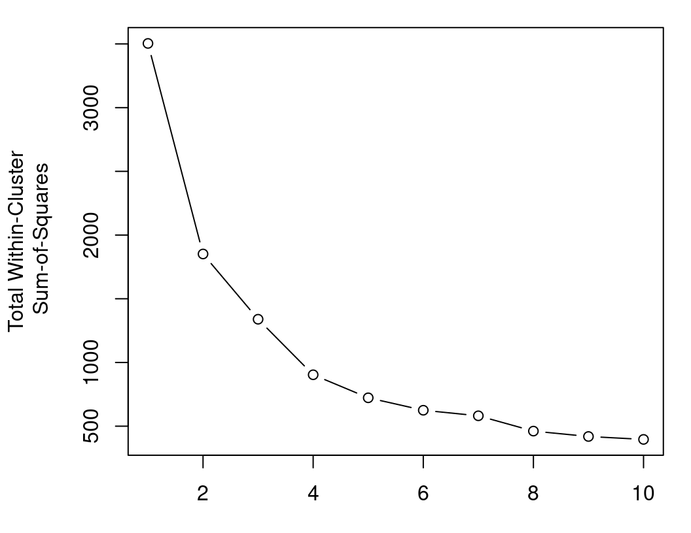
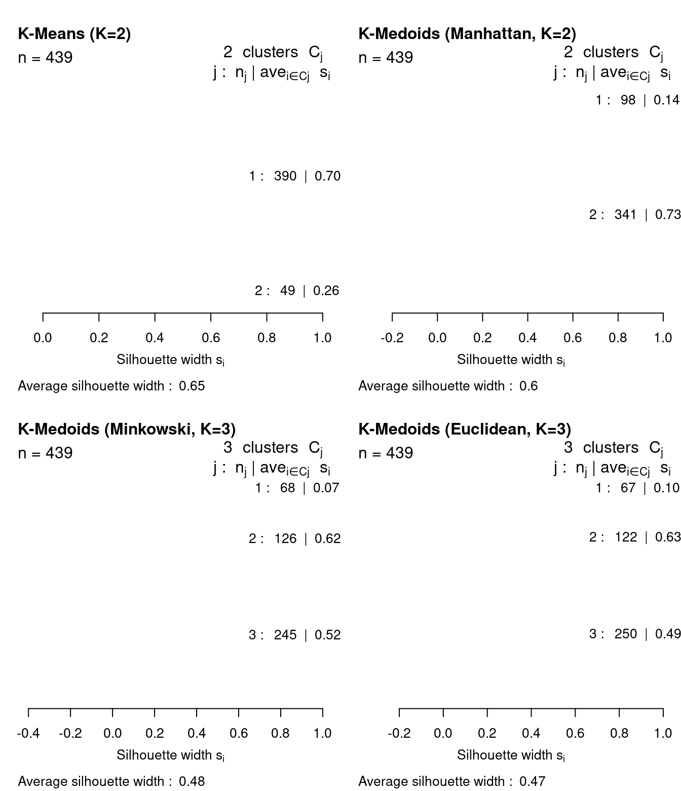

kmeans_pp <- function(X, # data
K # number of centroids
) {
# sample initial centroid from distinct rows of X
X <- unique(as.matrix(X))
new_center_index <- sample(nrow(X), 1)
centers <- X[new_center_index,, drop=FALSE]
# let x be all observations not yet chosen as a centroid
X <- X[-new_center_index,, drop=FALSE]
if(K >= 2) {
# loop over remaining centroids
for(kk in 2:K) {
# calculate distances from all observations to all already chosen centroids
distances <- apply(X, 1, function(x) min(sum((x - centers)^2)))
# sample new centroid with probability proportional to squared Euclidean distance
probabilities <- distances/sum(distances)
new_center_index <- sample(nrow(X), 1, prob=probabilities)
# record the new centroid and remove it for the next iteration
centers <- rbind(centers, X[new_center_index,, drop=FALSE])
X <- X[-new_center_index,, drop=FALSE]
}
}
# add random jitter to distinguish non-unique centroids and return
centers[duplicated(centers)] <- jitter(centers[duplicated(centers)])
return(centers)
}8 Dissimilarity-based Cluster Analysis of Educational Data: A Comparative Tutorial using R
Abstract
Clustering is a collective term which refers to a broad range of techniques aimed at uncovering patterns and subgroups within data. Interest lies in partitioning heterogeneous data into homogeneous groups, whereby cases within a group are more similar to each other than cases assigned to other groups, without foreknowledge of the group labels. Clustering is also an important component of several exploratory methods, analytical techniques, and modelling approaches and therefore has been practiced for decades in education research. In this context, finding patterns or differences among students enables teachers and researchers to improve their understanding of the diversity of students —and their learning processes— and tailor their supports to different needs. This chapter introduces the theory underpinning dissimilarity-based clustering methods. Then, we focus on some of the most widely-used heuristic dissimilarity-based clustering algorithms; namely, \(K\)-Means, \(K\)-Medoids, and agglomerative hierarchical clustering. The \(K\)-Means clustering algorithm is described including the outline of the arguments of the relevant R functions and the main limitations and practical concerns to be aware of in order to obtain the best performance. We also discuss the related \(K\)-Medoids algorithm and its own associated concerns and function arguments. We later introduce agglomerative hierarchical clustering and the related R functions while outlining various choices available to practitioners and their implications. Methods for choosing the optimal number of clusters are provided, especially criteria that can guide the choice of clustering solution among multiple competing methodologies —with a particular focus on evaluating solutions obtained using different dissimilarity measures— and not only the choice of the number of clusters \(K\) for a given method. All of these issues are demonstrated in detail with a tutorial in R using a real-life educational data set.
1 Introduction
Cluster analysis is a term used to describe a broad range of techniques which have the goal of uncovering groups of observations in a data set. The typical aim of cluster analysis is to categorise observations into groups in such a way that observations within the same group are in some sense more similar to each other, while being relatively dissimilar to those in other groups [1]. In other words, clustering methods uncover group structure in heterogeneous populations by identifying more homogeneous groupings of observations which may represent distinct, meaningful subpopulations. Using machine learning terminology, cluster analysis corresponds to unsupervised learning, whereby groups are identified by relying solely on the intrinsic characteristics (typically dissimilarities), without guidance from unavailable ground truth group labels. Indeed, foreknowledge of the fixed number of groups in a data set is characteristic of supervised learning and the distinct field of classification analysis.
It is important to note that there is no universally applicable definition of what constitutes a cluster [2, 3]. Indeed, in the absence of external information in the form of existing “true” group labels, different clustering methods can reveal different things about the same data. There are many different ways to cluster the same data set, and different methods may yield solutions with different assignments, or even differ in the number of groups they identify. Consequently, we present several cluster analysis algorithms in this chapter; namely, \(K\)-Means [4] in sec-kmtheory, a generalisation thereof, \(K\)-Medoids [5], in sec-kmedoids, and agglomerative hierarchical clustering [6] in sec-hclust. We apply each method in a comparative study in our tutorial using R [7], with applications to a data set about the participants from discussion forum of a massive open online course (MOOC) for teachers.
The clustering methods we review in this chapter are designed to find mutually exclusive, non-overlapping groups in a data set, i.e., they recover a hard partition whereby each observation belongs to one group only. This is in contrast to soft clustering approaches under which each observation is assigned a probability of belonging to each group. One such example of soft clustering is the model-based clustering paradigm, which is discussed in the later Chapter 9 [8]. While model-based clustering methods, as the name suggests, are underpinned by the assumption of generative probabilistic models [9], the more traditional dissimilarity-based methods on which this chapter is focused are purely algorithmic in nature and rely on heuristic criteria regarding the pairwise dissimilarities between objects.
Heuristic clustering algorithms can be further divided into two categories; partitional clustering (e.g., \(K\)-Means and \(K\)-Medoids) and hierarchical (of which we focus on the agglomerative variant). Broadly speaking, partitional clustering methods start with an initial grouping of observations and iteratively update the clustering until the “best” clustering is found, according to some notion of what defines the “best” clustering. Hierarchical clustering methods, on the other hand, is more sequential in nature; a tree-like structure of nested clusterings is built up via successive mergings of similar observations, according to a defined similarity metric. In our theoretical expositions and our applications in the R tutorial, we provide some guidelines both on how to choose certain method-specific settings to yield the best performance and how to determine the optimal clustering among a set of competing methods.
The remainder of this chapter proceeds as follows. In sec-review, we review relevant literature in which dissimilarity-based clustering methods have been applied in the realm of educational research. In sec-methods, we describe the theoretical underpinnings of each method in turn and discuss relevant practical guidelines which should be followed to secure satisfactory performance from each method throughout. Within sec-tutR, we introduce the data set of our case study in sec-data and give an overview of some required pre-processing steps in sec-process, and then present a tutorial using R for each clustering method presented in this chapter in sec-apps, with a specific focus on identifying the optimal clustering solution in sec-sil. Finally, we conclude with a discussion and some recommendations for related further readings in sec-disc, with a particular focus on some limitations of dissimilarity-based clustering which are addressed by other frameworks in the broader field of cluster analysis.
2 Clustering in education: review of the literature
In education, clustering is among the oldest and most common analysis methods, predating the field of learning analytics and educational data mining by several decades. Such early adoption of clustering is due to the immense utility of cluster analysis in helping researchers to find patterns within data, which is a major pursuit of education research [10]. Interest was fueled by the increasing attention to heterogeneity and individual differences among students, their learning processes, and their approaches to learning [11, 12]. Finding such patterns or differences among students allows teachers and researchers to improve their understanding of the diversity of students and tailor their support to different needs [13]. Finding subgroups within cohorts of students is a hallmark of so-called “person-centered methods”, to which clustering belongs [8].
A person-centered approach stands in contrast to the variable-centered methods which consider that most students belong to a coherent homogeneous group with little or negligible differences [14]. Variable-centered methods assume that there is a common average pattern that represents all students, that the studied phenomenon has a common causal mechanism, and that the phenomenon evolves in the same way and results in similar outcomes amongst all students. These assumptions are largely understood to be unrealistic, “demonstrably false, and invalidated by a substantial body of uncontested scientific evidence” [15]. In fact, several analytical problems necessitate clustering, e.g., where opposing patterns exist [16]. For instance, in examining attitudes towards an educational intervention using variable-centered methods, we get an average that is simply the sum of negative and positive attitudes. If the majority of students have a positive attitude towards the proposed intervention —combined with a minority against— the final result will imply that students favour such intervention. The conclusions of this approach are not only wrong but also dangerous as it risks generalising solutions to groups to whom it may cause harm.
Therefore, clustering has become an essential method in all subfields of education (e.g., education psychology, education technology, and learning analytics) having operationalised almost all quantitative data types and been integrated with most of the existing methods [10, 17]. For instance, clustering became an essential step in sequence analysis to discover subsequences of data that can be understood as distinct approaches or strategies of students’ behavior [18]. Similar applications can be found in social network analysis data to identify collaborative roles, or in multimodal data analysis to identify moments of interest (e.g., synchrony). Similarly, clustering has been used with survey data to find attitudinal patterns or learning approaches to mention a few [17]. Furthermore, identifying patterns within students’ data is a prime educational interest in its own right and therefore, has been used extensively as a standalone analysis technique to identify subgroups of students who share similar interests, attitudes, behaviors, or background.
Clustering has been used in education psychology for decades to find patterns within self-reported questionnaire data. Early examples include the work of Beder and Valentine [19] who used responses of a motivational questionnaire to discover subgroups of students with different motivational attitudes. Similarly, Clément et al. [20] used the responses of a questionnaire that assessed anxiety and motivation towards learning English as a second language to find clusters which differentiated students according to their attitudes and motivation. Other examples include the work by Fernandez-Rio et al. [21] who used hierarchical clustering and \(K\)-Means to identify distinct student profiles according to their perception of the class climate. With the digitalisation of educational institutions, authors also sought to identify students profiles using admission data and learning records. For instance, Cahapin et al. [22] used several algorithms such as \(K\)-Means and agglomerative hierarchical clustering to identify patterns in students’ admission data.
The rise of online education opened many opportunities to investigate students’ behavior in learning management systems based on the trace log data that students leave behind them when working on online activities. An example is the work by Saqr et al. [23], who used \(K\)-Means to cluster in-service teachers’ approaches to learning in a MOOC according to their frequency of clicks on the available learning activities. Recently, research has placed a focus on the temporality of students’ activities, rather than the mere count. For this purpose, clustering has been integrated within sequence analysis to find subsequences which represent meaningful patterns of students behavior. For instance, Jovanovic et al. [24] used hierarchical clustering to identify distinct learning sequential patterns based on students’ online activities in a learning management system within a flipped classroom, and found a significant association between the use of certain learning sequences and learning outcomes. Using a similar approach, López-Pernas et al. [25] used hierarchical clustering to identify distinctive learning sequences in students’ use of the learning management system and an automated assessment tool for programming assignments. They also found an association between students’ activity patterns and their performance in the course final exam. Several other examples exist for using clustering to find patterns within sequence data [16, 26, 27].
A growing application of clustering can be seen in the study of computer-supported collaborative learning. Saqr and López-Pernas [28] used cluster analysis to discover students with similar emergent roles based on their forum interaction patterns. Using the \(K\)-Means algorithm and students’ centrality measures in the collaboration network, they identified three roles: influencers, mediators, and isolates. Perera et al. [29] used \(K\)-Means to find distinct groups of similar teams and similar individual participating students according to their contributions in an online learning environment for software engineering education. They found that several clusters which shared some distinct contribution patterns were associated with more positive outcomes. Saqr and López-Pernas [30] analysed the temporal unfolding of students’ contributions to group discussions. They used hierarchical clustering to identify patterns of distinct students’ sequences of interactions that have a similar start and found a relationship between such patterns and student achievement.
An interesting application of clustering in education concerns the use of multimodal data. For instance, Vieira et al. [31] used \(K\)-Means clustering to find patterns in students’ presentation styles according to their voice, position, and posture data. Other innovative uses involve students’ use of educational games [32, 33], virtual reality [34], or artificial intelligence [35]. Though this chapter illustrates traditional dissimilarity-based clustering algorithms with applications using R to data on the centrality measures of the participants of a MOOC, along with related demographic characteristics, readers are also encouraged to read Chapter 9 [8] and Chapter 10 [18] in which further tutorials are presented and additional literature is reviewed, specifically in the contexts of clustering using the model-based clustering paradigm and clustering longitudinal sequence data, respectively. We now turn to an explication of the cluster analysis methodologies used in this chapter’s tutorial.
3 Clustering methodology
In this section, we describe some of the theory underpinning the clustering methods used in the later R tutorial in sec-tutR. We focus on some of the most widely-known heuristic dissimilarity-based clustering algorithms; namely, \(K\)-means, \(K\)-medoids, and agglomerative hierarchical clustering. In sec-kmtheory, we introduce \(K\)-Means clustering by describing the algorithm, outline the arguments to the relevant R function kmeans(), and discuss some of the main limitations and practical concerns researchers should be aware of in order to obtain the best performance when running \(K\)-Means. We also discuss the related \(K\)-Medoids algorithm and the associated function pam() in the cluster library [36] in R, and situate this method in the context of an extension to \(K\)-Means designed to overcome its reliance on squared Euclidean distances. In sec-hclust, we introduce agglomerative hierarchical clustering and the related R function hclust(), while outlining various choices available to practitioners and their implications. Though method-specific strategies of choosing the optimal number of clusters \(K\) are provided throughout sec-kmtheory and sec-hclust, we offer a more detailed treatment of this issue in sec-chooseK, particularly with regard to criteria that can guide the choice of clustering solution among multiple competing methodologies, and not only the choice of the number of clusters \(K\) for a given method.
3.1 \(K\)-Means
\(K\)-means is a widely-used clustering algorithm in learning analytics and indeed data analysis and machine learning more broadly. It is an unsupervised technique that seeks to divide a typically multivariate data set into some pre-specified number of clusters, based on the similarities between observations. More specifically, \(K\)-means aims to partition \(n\) objects \(\mathbf{x}_1,\ldots,\mathbf{x}_n\), each having measurements on \(j=1,\ldots,d\) strictly continuous covariates, into a set of \(K\) groups \(\mathcal{C}=\{C_1,\ldots,C_K\}\), where \(C_k\) is the set of \(n_k\) objects in cluster \(k\) and the number of groups \(K \le n\) is pre-specified by the practitioner and remains fixed. \(K\)-means constructs these partitions in such a way that the squared Euclidean distance between the row vector for observations in a given cluster and the centroid (i.e., mean vector) of the given cluster are smaller than the distances to the centroids of the remaining clusters. In other words, \(K\)-means aims to learn both the cluster centroids and the cluster assignments by minimising the within-cluster sums-of-squares (i.e., variances). Equivalently, this amounts to maximising the between-cluster sums-of-squares, thereby capturing heterogeneity in a data set by partitioning the observations into homogeneous groups. What follows is a brief technical description of the \(K\)-Means algorithm in sec-kmalgo, after which we describe some limitations of \(K\)-Means and discuss practical concerns to be aware of in order to optimise the performance of the method in sec-limitations. In particular, we present the widely-used \(K\)-Medoids extension in sec-kmedoids.
3.1.1 \(K\)-Means algorithm
The origins of \(K\)-Means are not so straightforward to summarise. The name was initially used by James MacQueen in 1967 [4]. However, the standard algorithm was first proposed by Stuart Lloyd in a Bell Labs technical report in 1957, which was later published as a journal article in 1982 [37]. In order to understand the ideas involved, we must first define some relevant notation. Let \(\mu_k^{(j)}\) denote the centroid value for the \(j\)-th variable in cluster \(C_k\) by \[\mu_k^{(j)} = \frac{1}{n_k}\sum_{\mathbf{x}_i \in C_k} x_{ij}\] and the complete centroid vector for cluster \(C_k\) by \[\boldsymbol{\mu}_k = \left(\mu_k^{(1)}, \ldots, \mu_k^{(p)}\right)^\top.\] These centroids therefore correspond to the arithmetic mean vector of the observations in cluster \(C_k\). Finding both these centroids \(\boldsymbol{\mu}_1,\ldots,\boldsymbol{\mu}_K\) and the clustering partition \(\mathcal{C}\) is computationally challenging and typically proceeds by iteratively alternating between allocating observations to clusters and then updating the centroid vectors. Formally, the objective is to minimise the total within-cluster sum-of-squares \[\begin{equation} \sum_{i=1}^n\sum_{k=1}^K z_{ik} \lVert \mathbf{x}_i - \boldsymbol{\mu}_k\rVert_2^2, \label{eq:kmeans_objective} \end{equation}\] where \(\lVert\mathbf{x}_i - \boldsymbol{\mu}_k\rVert_2^2=\sum_{j=1}^p\left(x_{ij}-\mu_k^{(j)}\right)^2\) denotes the squared Euclidean distance to the centroid \(\boldsymbol{\mu}_k\) — such that \(\lVert\cdot\rVert_2\) denotes the \(\ell^2\) norm— and \(\mathbf{z}_i=(z_{i1},\ldots,z_{iK})^\top\) is a latent variable such that \(z_{ik}\) denotes the cluster membership of observation \(i\); \(z_{ik}=1\) if observation \(i\) belongs to cluster \(C_k\) and \(z_{ik}=0\) otherwise. This latent variable construction implies \(\sum_{i=1}^n z_{ik}=n_k\) and \(\sum_{k=1}^Kz_{ik}=1\), such that each observation belongs wholly to one cluster only. As the total variation in the data, which remains fixed, can be written as a sum of the total within-cluster sum-of-squares (TWCSS) from Equation \(\eqref{eq:kmeans_objective}\) and the between-cluster sum-of-squares as follows \[\sum_{i=1}^n \left(\mathbf{x}_i - \bar{\mathbf{x}}\right)^2=\sum_{i=1}^n\sum_{k=1}^K z_{ik} \lVert \mathbf{x}_i - \boldsymbol{\mu}_k\rVert_2^2 + \sum_{k=1}^Kn_k\lVert\boldsymbol{\mu}_k - \bar{\mathbf{x}}\rVert_2^2,\] where \(\bar{\mathbf{x}}\) denotes the overall sample mean vector, minimising the TWCSS endeavours to ensure that observations in the same cluster are maximally similar to observations in the same cluster and maximally dissimilar to those in other clusters.
Using the notation just introduced, a generic \(K\)-means algorithm would proceed as follows:
Initialise: Select the number of desired clusters \(K\) and define \(K\) initial centroid vectors \(\boldsymbol{\mu}_1,\ldots,\boldsymbol{\mu}_K\).
Allocate: Find the optimal \(z_{ik}\) values that minimise the objective, holding the \(\mu_k\) values fixed.
Calculate the squared Euclidean distance between each observation and each centroid vector and allocate each object to the cluster corresponding to the initial centroid to which it is closest in terms of squared Euclidean distance. Looking at the objective function in Equation \(\eqref{eq:kmeans_objective}\) closely and examining the contribution of observation \(i\), we need to choose the value of \(\mathbf{z}_i\) which minimises the expression \(\sum_{k=1}^K z_{ik} \lVert \mathbf{x}_i - \boldsymbol{\mu}_k\rVert_2^2\). This is achieved by setting \(z_{ik}=1\) for the value of \(k\) that has smallest \(\lVert \mathbf{x}_i - \boldsymbol{\mu}_k\rVert_2^2\) and setting \(z_{ik^\prime}=0\:\forall\:k^\prime\ne k\) everywhere else.
- Update: Find the optimal \(\boldsymbol{\mu}_k\) values that minimise the objective, holding the \(z_{ik}\) values fixed.
If we re-write the objective function in Equation \(\eqref{eq:kmeans_objective}\) as \[\sum_{i=1}^n\sum_{k=1}^K\sum_{j=1}^p z_{ik} \left(x_{ij}-\mu_k^{(j)}\right)^2,\] we can use the fact that \[\frac{\partial}{\partial \mu_k^{(j)}}\left(x_{ij}-\mu_k^{(j)}\right)^2=-2\left(x_{ij}-\mu_k^{(j)}\right)\] to obtain \[\frac{\partial}{\partial \mu_k^{(j)}}\sum_{i=1}^n\sum_{k=1}^K\sum_{j=1}^p z_{ik} \left(x_{ij}-\mu_k^{(j)}\right)^2=-2\sum_{i=1}^nz_{ik}\left(x_{ij}-\mu_k^{(j)}\right).\] Solving this expression for \(\mu_k^{(j)}\) yields \[\mu_k^{(j)}=\frac{\sum_{i=1}^nz_{ik}x_{ij}}{\sum_{i=1}^nz_{ik}}=\frac{1}{n_k}\sum_{\mathbf{x}_i \in C_k} x_{ij}.\]
- Iterate: One full iteration of the algorithm consists of an allocation step (Step 2) and an update step (Step 3). Steps 2 and 3 are repeated until no objects can be moved between clusters, at which point the algorithm has converged to at least a local minimum of Equation \(\eqref{eq:kmeans_objective}\).
Upon convergence, we obtain not only the estimated partition \(\mathcal{C}=\{C_1,\ldots,C_K\}\), indicating the cluster membership of each observation, but also the estimated cluster centroids \(\boldsymbol{\mu}_1,\ldots,\boldsymbol{\mu}_K\) which act as cluster prototypes, efficiently summarising the characteristics of each cluster. The algorithm just described is just one standard variant of \(K\)-Means. there have been several algorithms proposed for the same objective which derive their names from the author who proposed them; namely MacQueen [4], Lloyd [37], Forgy [38], and Hartigan and Wong [39]. They differ in some subtle ways, particularly with regard to how initial centroids in Step 1 are chosen and whether Steps 3 and 4 are applied to all \(n\) observations simultaneously or whether allocations and centroids are updated for each observation one-by-one (i.e., some variants iterate over Step 2 and Step 3 in a loop over \(i=1,\ldots,n\)). Without going into further details, we note that the default option for kmeans() in R uses the option algorithm="Hartigan-Wong" and this is what we will henceforth adopt throughout.
3.1.2 \(K\)-Means limitations and practical concerns
Though \(K\)-Means is a useful tool in many application contexts due to its conceptual and computational simplicity —so ubiquitous, in fact, that the kmeans() function in R is available without loading any additional libraries— it suffers from numerous limitations and some care is required in order to obtain reasonable results. We now discuss some of the main limitations in turn, but note that each is addressed explicitly throughout the \(K\)-Means application portion of the R tutorial in sec-kmapp. The concerns relate to choosing \(K\) (sec-elbow), choosing initial centroids \(\boldsymbol{\mu}_1,\ldots,\boldsymbol{\mu}_K\) (sec-kmpp), and relaxing the reliance on squared Euclidean distances with the more general \(K\)-Medoids method (sec-kmedoids).
3.1.2.1 Fixed \(K\) and the elbow method
The first major drawback is that the number of clusters \(K\) must be pre-specified. This is a key input parameter: if \(K\) is too low, dissimilar observations will be wrongly grouped together; if \(K\) is too large, observations will be partitioned into many small, similar clusters which may not be meaningfully different. Choosing the optimal \(K\) necessitates running the algorithm at various fixed values of \(K\) and finding the single value of \(K\) which best balances interpretability, parsimony, and fit quality. Fit quality is measured by the TWCSS, i.e., the objective function in Equation \(\eqref{eq:kmeans_objective}\). Increasing \(K\) indefinitely will cause the TWCSS to decrease indefinitely, but this is not what we want. Instead, we seek a \(K\) value beyond which the decrease in TWCSS is minimal, in order to yield a parsimonious solution with a reasonable number of clusters to interpret, without overfitting the data or merely subdividing the actual groups. Thus, a commonly used heuristic graphical method for determining the optimal \(K\) value is to plot a range of \(K\) values against the corresponding obtained TWCSS values and look for an “elbow” or kink in the resulting curve. Such a plot will guide the choice of \(K\) in the \(K\)-Means portion of R tutorial which follows in sec-kmapp.
3.1.2.2 Initialisation and \(K\)-Means
An especially pertinent limitation which must be highlighted is that \(K\)-Means is liable to converge to sub-optimal local minima, i.e., it is not guaranteed to converge to the global minimum of the objective function in Equation \(\eqref{eq:kmeans_objective}\). Many practitioners have observed that the performance of \(K\)-Means is particularly sensitive to a good choice of initial cluster centroids in Step 1. Indeed, as different initial settings can lead to different clusterings of the same data, good starting values are vital to the success of the \(K\)-Means algorithm. Typically, \(K\) random vectors are used to define the initial \(\boldsymbol{\mu}_1,\ldots,\boldsymbol{\mu}_K\) centroids. One means of mitigating (but not completely remedying) the problem is to run \(K\)-Means with a suitably large number of random starting values and choose the solution associated with the set of initial centroids which minimise the TWCSS criterion.
In order to contextualise this issue, it is prudent to first describe some of the main arguments to the kmeans() R function. The following list is a non-exhaustive list of the available arguments to kmeans():
x: a numeric matrix of data or adata.framewith all numeric columns.centers: either the number of clusters \(K\) or a set of \(K\) initial (distinct) cluster centroids.nstart: ifcentersis specified as a number, this represents the number of random sets of \(K\) initial centroids with which to run the algorithm.iter.max: the maximum number of allocation/update cycles allowed per set of initial centroids.
The arguments nstart and iter.max have default values of 1 and 10, respectively. Thus, a user running kmeans() with centers specified as a number will, by default, only use one random set of initial centroids, to which the results are liable to be highly sensitive, and will have the algorithm terminate after just ten iterations, regardless of whether convergence was achieved. It would seem be an improvement, therefore, to increase the values of nstart and iter.max from these defaults. Fortunately, the function automatically returns the single optimal solution according to the random initialisation which yields the lowest TWCSS when nstart exceeds 1.
Though this will generally lead to better results, this approach can be computationally onerous if the number of observations \(n\), number of features \(d\), or size of the range of fixed \(K\) values under consideration is large. An alternative strategy, which greatly reduces the computational burden and the sensitivity of the final solution to the initial choices of \(\boldsymbol{\mu}_1,\ldots,\boldsymbol{\mu}_k\) is to choose a suitable set of informed starting values in a data-driven fashion. To this end, the so-called \(K\)-Means algorithm was proposed [40] in order to improve the performance of \(K\)-Means by replacing Step 1 with an iterative distance-weighting scheme to select the initial cluster centroids. Though there is still randomness inherent in \(K\)-Means, this initialisation technique ensures that the initial centroids are well spread out across the data space, which increases the likelihood of converging to the true global minimum. The \(K\)-Means algorithm works as follows:
Choose an initial centroid uniformly at random from the rows of the data set.
For each observation not yet chosen as a centroid, compute \(D^2(\mathbf{x}_i)\), which represents the squared Euclidean distance between \(\mathbf{x}_i\) and the nearest centroid that has already been chosen.
Randomly sample new observation as a new centroid vector with probability proportional to \(D^2(\mathbf{x}_i)\).
Repeat Steps B and C until \(K\) centroids have been chosen. If any of the chosen initial centroids are not distinct, add a small amount of random jitter to distinguish the non-unique centroids.
Proceed as per Steps 2–4 of the traditional \(K\)-Means algorithm (or one of its variants).
Although these steps take extra time, \(K\)-Means itself tends to converge very quickly thereafter and thus \(K\)-Means actually reduces the computational burden. A manual implementation of the \(K\)-Means is provided by the function kmeans_pp() below. Its output can be used as the centers argument when running kmeans().
However, it should be noted that there is still inherent randomness in \(K\)-Means —note the use of sample() in lines 7 and 22— and the algorithm is liable to produce different initial centroids in different runs on the same data. In effect, \(K\)-Means does not remove the burden of random initialisation; it is merely a way to have more informed random initialisations. Thus, it would be prudent to run \(K\)-Means with \(K\)-Means initialisation and select the solution which minimises the TWCSS, to transfer the burden of requiring multiple runs of \(K\)-Means with random starting values to fewer runs of \(K\)-Means followed by \(K\)-Means with more informed starting values. We adopt this strategy in the later R tutorial in sec-kmapp.
3.1.2.3 \(K\)-Medoids and other distances
The \(K\)-Means objective function in Equation \(\eqref{eq:kmeans_objective}\) explicitly relies on squared Euclidean distances and requires all features in the data set to be strictly continuous. An artefact of this distance measure is that it is generally recommended to standardise all features of have a mean of zero and unit variance prior to running \(K\)-Means. In general, standardisation is advisable if the values are of incomparable units (e.g., height in inches and weight in kilogram). More specifically for \(K\)-Means, it is desirable to ensure all features have comparable variances to avoid having variables with higher magnitudes and variances dominate the distance calculation and have an undue prominence on the clustering partition obtained. While we employ such normalisation to the data used in our R tutorial when applying some pre-processing steps in sec-process, we note that this is not sufficient to overcome all shortcomings of relying on squared Euclidean distances.
For these reasons and more, \(K\)-Medoids —otherwise known as partitioning around medoids (PAM)— was proposed as an extension to \(K\)-Means which allows using any alternative dissimilarity measure [5]. The \(K\)-Medoids objective function is given by \[\sum_{i=1}^n\sum_{k=1}^K z_{ik} d\left(\mathbf{x}_i, \boldsymbol{\psi}_k\right),\] where \(d\left(\mathbf{x}_i, \boldsymbol{\psi}_k\right)\) can be any distance measure rather than squared Euclidean and \(\boldsymbol{\psi}_k\) is used in place of the mean vector \(\boldsymbol{\mu}_k\). The PAM algorithm works in much the same fashion as \(K\)-Means, alternating between an allocation step which assigns each observation to the cluster with the closest \(\boldsymbol{\psi}_k\) (according to the specified distance measure) and an update step which minimises the within-cluster total distance (WCTD). Notably, when minimising with respect to \(\boldsymbol{\psi}_k\), the notion of a cluster centroid \(\boldsymbol{\mu}_k\) is redefined as a cluster medoid \(\boldsymbol{\psi}_k\), which is selected among the rows of the observed data set, i.e., the medoid is the observation \(\mathbf{x}_i\) from which the distance to all other observations currently allocated to the same cluster, according to the specified distance measure, is minimised. Similar to \(K\)-Means, the medoids obtained at convergence again enable straightforward characterisation of a “typical” observation from each cluster and the elbow method from sec-elbow can be adapted to guide the choice of \(K\) in \(K\)-Medoids by plotting a range of candidate \(K\) values against the within-cluster total distance.
This reformulation has three main advantages. Firstly, the distance \(d\left(\mathbf{x}_i, \boldsymbol{\psi}_k\right)\) is not squared, which diminishes the influence of outliers. As \(K\)-Means relies on squared Euclidean distances, which inflates the distances of atypical observations, and defines centroids as means, it is not robust to outliers. Secondly, by defining the medoids as observed rows of the data, rather than finding the value of \(\boldsymbol{\psi}_k\) that minimises in general, which could potentially be difficult to estimate for complex data types or particularly sophisticated dissimilarity measures, the algorithm can be much more computationally efficient. It requires only a pre-calculated pairwise dissimilarity matrix as input. Finally, the flexibility afforded by being able to modify the dissimilarity measure enables data which are not strictly continuous to be clustered. In other words, \(K\)-Medoids is applicable in cases where the mean is undefined. As examples, one could use the Manhattan or general Minkowski distances as alternatives for clustering continuous data, the Hamming [41], Jaccard [42], or Sørensen-Dice [43, 44] distances for clustering binary data, or the Gower distance [45] for clustering mixed-type data with both continuous and categorical features. The closely related \(K\)-Modes algorithm [46] has also been proposed specifically for purely categorical data applications, as well as the \(K\)-Prototypes algorithm [47] for mixed-type variables applications; neither will considered further in this chapter). As their names suggest, they again redefine the notion of a centroid but otherwise proceed much like \(K\)-Means and \(K\)-Medoids.
The function pam() in the cluster library in R provides an implementation of \(K\)-Medoids, with options for implementing many recent additional speed improvements and improved initialisation strategies [48]. We will discuss these in the \(K\)-Medoids portion of the later R tutorial in sec-pamapp. Most dissimilarity measures we will use are implement in the base-R function dist(), with the exception of the Gower distance which is implemented in the daisy() function in the cluster library.
3.2 Agglomerative hierarchical clustering
Hierarchical clustering is another versatile and widely-used dissimilarity-based clustering paradigm. Though also dissimilarity-based, hierarchical clustering differs from partitional clustering methods like \(K\)-Means and \(K\)-Medoids in that it typically doesn’t avail of the notion of computing distances to a central prototype, be that a centroid mean vector or a medoid, but instead greedily builds a hierarchy of clusters based on dissimilarities between observations themselves and sets of observations. Consequently, a hierarchical clustering solution provides a set of partitions, from a single cluster to as many clusters as observations, rather than the single partition obtained by \(K\)-Means and \(K\)-Medoids. The results of a hierarchical clustering are usually presented in the form of a dendrogram visualisation, which illustrates the arrangement of the set of partitions visited and can help guide the decision of the optimal single clustering partition to extract. However, hierarchical clustering shares some of the advantages \(K\)-Medoids has over \(K\)-Means. Firstly, any valid measure of distance can be used, so it is not restricted to squared Euclidean distances and not restricted to clustering purely continuous data. Secondly, hierarchical clustering algorithms do not require the data set itself as input; all that is required is a matrix of pairwise distances.
Broadly speaking, there are two categories of hierarchical clustering:
Agglomerative: Starting from the bottom of the hierarchy, begin with each observation in a cluster of its own and successively merged pairs of clusters while moving up the hierarchy, until all observations are in one cluster. This approach is sometimes referred to as agglomerative nesting (AGNES; [6]).
Divisive: Starting from the top of the hierarchy, with all observations in one cluster, recursively split clusters while moving down the hierarchy, until all observations are in a cluster of their own. This approach is sometimes referred to as divisive analysis (DIANA; [49]).
However, divisive clustering algorithms such as DIANA are much more computationally onerous for even moderately large data sets. Thus, we focus here on the agglomerative variant of hierarchical clustering, AGNES, which is is implemented in both the agnes() function in the cluster library and the hclust() function in base R. We adopt the latter in the hierarchical clustering portion of the R tutorial in sec-hcapp. That being said, even agglomerative hierarchical clustering has significant computation and memory burdens when \(n\) is large [50, 51].
There are three key decisions practitioners must make when employing agglomerative hierarchical clustering. The first of these, the distance measure, has already been discussed in the context of \(K\)-Medoids. We now discuss the other two in turn; namely, the so-called linkage criterion for quantifying the distances between merged clusters as the algorithm moves up the hierarchy, and the criterion used for cutting the resulting dendrogram to produce a single partition.
3.2.1 Linkage criteria
Agglomerative hierarchical clustering employs two different notions of dissimilarity. There is the distance measure, \(d\), such as Euclidean, Manhattan, or Gower distance, which is used to quantify the distance between pairs of single observations in the data set. Different choices of distance measure can lead to markedly different clustering results and it is thus common to run the hierarchical clustering algorithm with different choices of distance measure and compare the results. However, in the agglomerative setting, individual observations are successively merged into clusters. In order to decide which clusters should be combined, it is necessary to quantify the dissimilarity of sets of observations as a function of the pairwise distances of observations in the sets. This gives rise to the notion of a linkage criterion. At each step, the two clusters separated by the shortest distance are combined; the linkage criteria is precisely the definition of ‘shortest distance’ which differentiates different agglomerative approaches. Again, the choice of linkage criterion can have a substantial impact on the result of the clustering so multiple solutions with different combinations of distance measure and linkage criterion should be evaluated.
There are a number of commonly-used linkage criteria which we now describe. A non-exhaustive list of such linkages follows —only those which we use in the later R tutorial in sec-tutR— in which we let \(\mathcal{A}\) and \(\mathcal{B}\) denote two sets of observations, \(\lvert\cdot\rvert\) denote the cardinality of a set, and \(d(a, b)\) denote the distance between observations in those corresponding sets according to the chosen distance measure. We note that ties for the maximum or minimum distances for complete linkage and single linkage, respectively, are broken at random.
Complete linkage: Define the dissimilarity between two clusters as the distance between the two elements (one in each cluster) which are furthest away from each other according to the chosen distance measure \(d\): \[\max_{a \in \mathcal{A}, b \in \mathcal{B}} d(a, b).\]
Single linkage: Define the dissimilarity between two clusters as the distance between the two elements (one in each cluster) which are closest to each other according to the chosen distance measure \(d\): \[\min_{a \in \mathcal{A}, b \in \mathcal{B}} d(a, b).\]
Average linkage: Define the dissimilarity between two clusters as the average distance according to the chosen distance measure \(d\) between all pairs of elements (on in each cluster): \[\frac{1}{\lvert\mathcal{A}\rvert \times \lvert\mathcal{B}\rvert}\sum_{a \in \mathcal{A}}\sum_{b \in \mathcal{B}}d_(a, b).\]
Centroid linkage: Define the dissimilarity between two clusters \(\mathcal{A}\) and \(\mathcal{B}\) as the distance, according to the chosen distance measure \(d\), between their corresponding centroid vectors \(\boldsymbol{\mu}_{\mathcal{A}}\) and \(\boldsymbol{\mu}_{\mathcal{B}}\): \[d(\boldsymbol{\mu}_{\mathcal{A}}, \boldsymbol{\mu}_{\mathcal{B}}).\]
Ward linkage [52]: Instead of measuring the dissimilarity between clusters directly, define the dissimilarity as the cost of merging two clusters as the increase in total within-cluster variance after merging. In other words, minimise the total within-cluster sum-of-squares by finding the pair of clusters at each step which leads to minimum increase in total within-cluster variance after merging, where \(\mathcal{A} \cup \mathcal{B}\) denotes the cluster obtained after merging, with corresponding centroid \(\boldsymbol{\mu}_{\mathcal{A}\cup\mathcal{B}}\): \[\frac{\lvert\mathcal{A}\rvert \times \lvert \mathcal{B}}{\lvert \mathcal{A} \cup \mathcal{B}\rvert}\lVert\boldsymbol{\mu}_{\mathcal{A}} - \boldsymbol{\mu}_{\mathcal{B}}\rVert_2^2 = \sum_{x\in \mathcal{A}\cup\mathcal{B}}\lVert x - \boldsymbol{\mu}_{\mathcal{A}\cup\mathcal{B}}\rVert_2^2 - \sum_{x \in \mathcal{A}}\lVert x - \boldsymbol{\mu}_{\mathcal{A}}\rVert_2^2 - \sum_{x \in \mathcal{B}}\lVert x - \boldsymbol{\mu}_{\mathcal{B}}\rVert_2^2.\]
The Ward and centroid linkage criteria differ from the other linkage criteria in that they are typically meant to be used only when the initial pairwise distances between observations are squared Euclidean distances. All of the above linkage criteria are implemented in the function hclust(), which is available in R without requiring any add-on libraries to be loaded and specifically performs agglomerative hierarchical clustering. Its main arguments are d, a pre-computed pairwise dissimilarity matrix (as can be created from the function dist()), and method, which specifies the linkage criterion (e.g., "complete", "single", "average", and "centroid"). Special care must be taken when employing Ward’s linkage criterion as two options are available: "ward.D", which assumes that the initial pairwise distance matrix already consists of squared Euclidean distances, and "ward.D2", which assumes the distances are merely Euclidean distances and performs the squaring internally [53].
3.2.2 Cutting the dendrogram
One might notice that when calling hclust(), the number of clusters \(K\) is not specified in advance, as it is when calling kmeans() or pam(). Instead, hclust() returns an object which describes the hierarchy of the tree produced by the clustering process. A visualisation of such a tree is referred to as a dendrogram, which can be thought of as a representation of a set of candidate partitions. In a dendrogram representation of an agglomerative hierarchical clustering solution, each observation is initially in a singleton cluster on its own, along the x-axis, according to their similarities. Thereafter, each observation, and subsequently each set of observations, are merged along the y-axis in a nested fashion. The scale along the y-axis is proportional to the distance, according to the chosen linkage criterion, at which two clusters are combined. In the end, the groups formed towards the bottom of the graph are close together, whereas those at the top of the graph are far apart.
Obtaining a single hard partition of objects into disjoint clusters is obtained by cutting the dendrogram horizontally at the corresponding height. In other words, observations are allocated to clusters by cutting the tree at an appropriate height. Generally, the lower this height, the greater the number of clusters (theoretically, there can be as many clusters as there are observations, \(n\)), while the greater the height, the lower the number of clusters (theoretically, there can be as few as only one cluster, corresponding to no group structure in the data). Thus, an advantage of hierarchical clustering is that the user need not know \(K\) in advance; the user can manually select \(K\) after the fact by examining the constructed tree and fine-tuning the output to find clusters with a desired level of granularity. There is no universally applicable rule for determining the optimal height at which to cut the tree, but it is common to select a height in the region where there is the largest gap between merges, i.e., where there is a relatively wide range of distances over which the number of clusters in the resulting partition does not change. This is, of course, very much guided by the visualisation itself.
In R, one can visualise the dendrogram associated with a particular choice of distance measure and linkage criterion by calling plot() on the output from hclust(). Thereafter, the function cutree() can be used to obtain a single partition. This function takes the arguments tree, which is the result of a call to hclust(), h which is the height at which the tree should be cut, and k which more directly allows the desired number of clusters to be produced. Specifying k finds the corresponding height which yields k clusters and overrides the specification of h.
However, it is often the case that certain combinations of dissimilarity measure and linkage criterion produce undesirable dendrograms. In particular, complete linkage is known to perform poorly in the presence of outliers, given its reliance on maximum distances, and single linkage is known to produce a “chaining” effect on the resulting dendrogram, whereby, due to its reliance on minimum distances, observations tend to continuously join increasingly larger, existing clusters rather than being merged with other observations to form new clusters. A negative consequence of this phenomenon is lack of cohesion: observations at opposite ends of the same cluster in a dendrogram could be quite dissimilar. These limitations can also be attributed to hierarchical clustering —regardless of the linkage employed— optimising a local criterion for each merge, unlike \(K\)-Means and \(K\)-Medoids which endeavour to optimise global objectives.
3.3 Choosing the number of clusters
Determining the number of clusters in a data set is a fraught task. Throughout sec-kmtheory and sec-hclust, method-specific strategies for guiding the choice of \(K\) were presented. However, they are not without their limitations. For \(K\)-Means and \(K\)-Medoids, the elbow method is somewhat subjective and unreliable. Often, the presence of an elbow is not so clear at a single value of \(K\). Likewise, for agglomerative hierarchical clustering, choosing a height at which to cut the dendrogram as the criterion for choosing \(K\) has also been criticised as an overly subjective method. Moreover, these strategies are only capable of identifying the best \(K\) value conditional on the chosen method and do not help to identify the overall best solution among multiple competing methods. Moreover, we are required to choose more than just the optimal \(K\) value when using \(K\)-Medoids (for which different solutions with different dissimilarity measures and different \(K\) values can be obtained) and agglomerative hierarchical clustering (for which different solutions can be obtained using different dissimilarity measures and linkage criteria).
Overcoming these ambiguities and identifying a more general strategy for comparing the quality of clustering partitions is a difficult task for which many criteria have been proposed. Broadly speaking, cluster quality measures fall into two categories:
Comparing of the uncovered partition to a reference clustering (or known grouping labels).
Measuring of internal cluster consistency without reference to ground truth labels.
The first is typically conducted using the Rand index [54] or adjusted Rand index [55], which measure the agreement between two sets of partitions. However, as we will be exploring clustering in exploratory, unsupervised settings, using data for which there is no assumed “true” group structure, we will instead focus on a quality measure of the latter kind. As previously stated, a large number of such criteria have been proposed in the literature: several are summarised in Table 7 of Chapter 10 of this book [18], where they are used to guide the choice of \(K\) for agglomerative hierarchical clustering in the context of sequence analysis. Here, however, for the sake of brevity, we describe only one commonly used criterion which we later employ in the R tutorial in sec-tutR —which is itself a dissimilarity-based measure and is thus universally applicable to all clustering algorithms we employ— even if in most applications it would be wise to inform the choice of \(K\) with several such quantitative criteria. Moreover, the practitioner’s own subject matter expertise and assessment of the interpretability of the obtained clusters should also be used to inform the choice of \(K\).
The quantitative criterion we employ is referred to as the average silhouette width (ASW) criterion [56], which is routinely used to assess the cohesion and separation of the clusters uncovered by dissimilarity-based methods. Cohesion refers to the tendency to group similar objects together and separation refers to the tendency to group dissimilar objects apart in non-overlapping clusters. As the name implies, the ASW is computed as the average of observation-specific silhouette widths. Under the assumption that \(K>1\), silhouette widths and the ASW criterion are calculated as follows:
Let \(a(i)\) be the average dissimilarity from observation \(i\) to the other members of the same cluster to which observation \(i\) is assigned.
Compute the average dissimilarity from observation \(i\) to the members of all \(K-1\) other clusters: let \(b(i)\) be the minimum such distance computed.
The silhouette for observation \(i\) is then defined to be \[\begin{align*} s(i) &= \frac{b(i) - a(i)}{\max\{a(i), b(i)\}}\\ &= \begin{cases} 1 - \frac{a(i)}{b(i)} & \mbox{if}\:a(i) < b(i)\\ 0& \mbox{if}\:a(i)=b(i)\\ \frac{b(i)}{a(i)} - 1 & \mbox{if}\:a(i) > b(i), \end{cases} \end{align*}\] unless observation \(i\) is assigned to a cluster of size \(1\), in which case \(s(i)=0\). Notably, \(a(i)\) and \(b(i)\) need not be calculated using the same dissimilarity measure with which the data were clustered; it is common to adopt the Euclidean distance.
Define the ASW for a given partition \(\mathcal{C}\) as: \(\mbox{ASW}\left(\mathcal{C}\right)=\frac{1}{n}\sum_{i=1}^n s_i.\)
Given that \(-1 \le s(i) \le 1\), the interpretation of \(s(i)\) is that a silhouette close to \(1\) indicates that the observation has been well-clustered, a silhouette close to \(-1\) indicates that the observation would be more appropriately assigned to another cluster, and a silhouette close to zero indicates that the observation lies on the boundary of two natural clusters. If most values of \(s(i)\) are high, then the clustering solution can be deemed appropriate. This occurs when \(a(i) \ll b(i)\), meaning that observation \(i\) must be well-matched its own cluster and poorly-matched to all other clusters. Conversely, if most \(s(i)\) values are low or even negative, this provides evidence that \(K\) may be too low or too high.
The values of \(s(i)\) can be averaged over all observations assigned to the same cluster, as a measure of how tightly grouped the observations in the given cluster are. The ASW criterion itself is simply the mean silhouette width over all observations in the entire data set. Generally, clustering solutions with higher ASW are to be preferred, however it is also prudent to dismiss solutions with many negative silhouettes or particularly low cluster-specific mean silhouettes. A silhouette plot can help in this regard; such a plot depicts all values of \(s(i)\), grouped according to the corresponding cluster and in decreasing order within a cluster. In the R tutorial which follows, ASW values and silhouette plots will guide the choice of an optimal clustering solution in a comparison of multiple methods in sec-sil.
4 Tutorial with R
In this section, we will learn how to perform clustering using the R programming language [7], using all methods described throughout sec-methods. We start by loading the necessary libraries. We will use cluster [36] chiefly for functions related to \(K\)-Medoids and silhouettes. As per other chapters in this book, we use tidyverse [57] for data manipulation and rio [58] for downloading the data: see sec-process for details the on the data pre-processing steps employed.
library(cluster)
library(rio)
library(tidyverse)We note that hierarchical clustering and \(K\)-Means are implemented in base R and thus no dedicated libraries need to be loaded.
4.1 The data set
Our case study will be to identify different groups of participants that have a similar role in the discussion forum of a massive open online course (MOOC) for teachers. For that purpose, we will rely on the centrality measures of the participants which indicate their number of contributions (OutDegree), replies (InDegree), position in the network (Closeness_total), worth of their connections (Eigen), spread of their ideas (Diffusion_degree), and more. For more details about the data set, please refer to the data chapter of the book (Chapter 2; [59]). To learn more about centrality measures and how to calculate them, refer to the social network analysis chapter (Chapter 15; [60]). We will henceforth refer to these data as “the MOOC centralities data set”. We can download and preview the data with the following commands:
URL <- "https://github.com/lamethods/data/raw/main/6_snaMOOC/"
df <- import(paste0(URL, "Centralities.csv"))
df name InDegree OutDegree Closeness_total Betweenness Eigen
1 1 20 33 0.0010952903 1258.1431850 0.2055232624
2 2 2 5 0.0008084074 26.5242892 0.0107177894
3 3 2 4 0.0007987220 30.6011204 0.0086239241
4 4 2 14 0.0010193680 72.5234541 0.0802648338
5 5 16 17 0.0010604454 309.0327391 0.1615036536
6 6 9 24 0.0010764263 250.3765497 0.1550094982
7 7 32 26 0.0011135857 1934.7200566 0.2302041085
8 8 13 18 0.0010604454 163.7078956 0.1363902568
9 9 2 12 0.0010395010 69.5153192 0.1193482282
10 10 8 12 0.0010582011 716.3507873 0.0874871529
11 11 47 74 0.0011415525 1030.1256784 0.5367529235
12 12 6 18 0.0009017133 113.9356190 0.0792423386
13 13 20 15 0.0010504202 396.2736532 0.0814983741
14 14 5 20 0.0010615711 323.5015525 0.0851784950
15 15 13 18 0.0010810811 824.0809988 0.0918144938
16 16 2 1 0.0007610350 2.4596368 0.0085424677
17 17 2 22 0.0010649627 292.6257167 0.0822010944
18 18 0 19 0.0010482180 125.1398610 0.0681777721
19 19 44 35 0.0011135857 3477.0829186 0.3246377117
20 20 1 2 0.0007535795 9.9781104 0.0101110123
21 21 2 0 0.0007524454 0.7902310 0.0036688846
22 22 8 15 0.0010504202 97.1915580 0.1682192728
23 23 6 0 0.0007874016 5.4497380 0.0180802121
24 24 21 36 0.0011123471 1388.2905421 0.2551222942
25 25 6 6 0.0009900990 215.0169840 0.0528201458
26 26 22 12 0.0010672359 853.1151654 0.0890963591
27 27 13 18 0.0010427529 990.4338200 0.1110229843
28 28 0 1 0.0007220217 0.0000000 0.0013039917
29 29 12 23 0.0010845987 1758.3222101 0.0910494829
30 30 32 58 0.0011185682 1082.0392103 0.4008891477
31 31 0 1 0.0007342144 0.0000000 0.0013570881
32 32 11 4 0.0009940358 348.1051140 0.0254295297
33 33 17 6 0.0010214505 263.0572324 0.0553454645
34 34 17 22 0.0010764263 568.8484248 0.1368169776
35 35 15 19 0.0010416667 669.3602403 0.1322268526
36 36 26 21 0.0011111111 2369.6371414 0.1554575978
37 37 7 4 0.0008130081 56.0357925 0.0159166865
38 38 7 2 0.0010070493 52.4812897 0.0240341490
39 39 5 13 0.0010504202 318.4100709 0.1123570051
40 40 0 1 0.0006269592 0.0000000 0.0009526790
41 41 29 6 0.0008658009 647.9906068 0.0639169509
42 42 10 9 0.0008291874 115.9592816 0.0481324558
43 43 1 7 0.0007917656 13.5338944 0.0134537327
44 44 47 70 0.0011494253 3068.9224639 0.4682891907
45 45 1 2 0.0009900990 29.4644832 0.0193875218
46 46 2 9 0.0008810573 130.2540153 0.0191762968
47 47 0 5 0.0008554320 15.5516046 0.0166120276
48 48 2 4 0.0009871668 51.7756650 0.0187293424
49 49 19 23 0.0010810811 1250.7696743 0.1485283643
50 50 16 14 0.0010626993 484.3529452 0.0999589521
51 51 6 13 0.0010395010 32.6934911 0.0673800053
52 52 4 13 0.0008944544 88.1521237 0.0427412033
53 53 19 16 0.0009337068 682.3111940 0.0694507887
54 54 14 28 0.0010834236 1345.3974363 0.1479616291
55 55 0 4 0.0008382230 1.2298762 0.0226620069
56 56 4 20 0.0009099181 222.3806295 0.0976355523
57 57 7 4 0.0009891197 305.8704317 0.0369728967
58 58 23 16 0.0010822511 524.5896242 0.1246945448
59 59 7 14 0.0010649627 971.3848297 0.0581854175
60 60 25 40 0.0011025358 2177.6429106 0.2368267894
61 61 29 24 0.0010857763 2184.5120982 0.2241756310
62 62 16 17 0.0010718114 133.2216585 0.1254680380
63 63 11 25 0.0010537408 109.5871078 0.1553457884
64 64 26 19 0.0010706638 1835.1876540 0.1217718194
65 65 1 2 0.0009803922 0.0000000 0.0185349570
66 66 4 4 0.0010362694 232.7577008 0.0334718629
67 67 21 9 0.0010810811 961.2135898 0.0856583118
68 68 21 40 0.0010764263 374.4623769 0.3405814112
69 69 4 6 0.0010330579 522.1215068 0.0347591675
70 70 3 1 0.0009832842 46.6600386 0.0179186564
71 71 1 12 0.0010245902 25.1852945 0.0991316666
72 72 3 3 0.0009881423 40.3550087 0.0342750551
73 73 0 2 0.0007309942 7.8528133 0.0017029045
74 74 6 10 0.0008771930 284.1545938 0.0249516706
75 75 3 7 0.0010351967 198.3385407 0.0482709864
76 76 1 4 0.0009813543 56.5269743 0.0194673530
77 77 3 8 0.0010288066 58.8542150 0.0415561810
78 78 3 3 0.0009881423 35.9312246 0.0344712126
79 79 0 4 0.0007363770 11.1939611 0.0032643760
80 80 1 6 0.0008203445 61.6404817 0.0209536405
81 81 3 6 0.0009960159 260.7955917 0.0212576197
82 82 1 6 0.0010277492 256.9924053 0.0293885075
83 83 1 13 0.0010526316 153.0658241 0.0790166252
84 84 5 0 0.0007524454 445.1039951 0.0048074022
85 85 1 6 0.0010330579 274.5465215 0.0292892559
86 86 0 1 0.0005652911 0.0000000 0.0000716541
87 87 3 9 0.0010482180 387.5102444 0.0656313725
88 88 16 14 0.0010548523 675.5725548 0.1096442277
89 89 0 1 0.0007204611 0.0000000 0.0016342418
90 90 1 3 0.0009784736 77.9221439 0.0191879706
91 91 7 11 0.0010384216 353.9543387 0.0475815700
92 92 17 16 0.0010729614 972.0850348 0.0799758753
93 93 1 2 0.0007331378 3.9856015 0.0019786851
94 94 6 1 0.0010204082 305.7537756 0.0438144242
95 95 4 3 0.0009784736 482.5073366 0.0180067198
96 96 0 12 0.0010341262 50.6176824 0.0839651399
97 97 0 5 0.0008438819 179.7650960 0.0128118347
98 98 16 12 0.0010330579 98.0851626 0.0885073388
99 99 3 3 0.0010330579 48.9651050 0.0343347235
100 100 22 7 0.0010741139 829.5885066 0.0974449345
101 101 9 3 0.0010384216 286.7287890 0.0334968424
102 102 0 6 0.0010266940 0.0000000 0.0555380035
103 103 5 9 0.0010330579 460.2065860 0.0594344802
104 104 6 15 0.0009124088 321.5050214 0.0430348022
105 105 2 3 0.0009940358 25.2618419 0.0205745242
106 106 2 4 0.0008051530 10.8406570 0.0163664056
107 107 4 15 0.0010101010 241.3700473 0.0356575372
108 108 0 4 0.0007733952 2.1090963 0.0070117896
109 109 4 18 0.0010245902 954.9946478 0.0967498757
110 110 2 2 0.0009832842 443.7347692 0.0167843259
111 111 0 1 0.0006863418 0.0000000 0.0002501696
112 112 3 2 0.0009842520 227.0754458 0.0202573996
113 113 4 6 0.0009950249 61.1674899 0.0230728887
114 114 6 5 0.0008928571 29.9737396 0.0356927379
115 115 20 6 0.0010373444 1699.6077221 0.0922388296
116 116 32 3 0.0010893246 2890.6619280 0.0563781883
117 117 5 1 0.0007987220 19.7901475 0.0207779040
118 118 1 5 0.0007547170 24.1764397 0.0048142608
119 119 5 2 0.0007800312 126.0135194 0.0060411570
120 120 1 2 0.0009813543 440.0000000 0.0157487639
121 121 1 10 0.0010416667 44.9144907 0.0630623146
122 122 2 1 0.0007530120 8.9998322 0.0025060641
123 123 0 5 0.0007656968 482.6751534 0.0044268576
124 124 0 2 0.0009794319 0.0000000 0.0157452652
125 125 0 1 0.0007363770 0.0000000 0.0008403141
126 126 0 3 0.0009794319 0.0000000 0.0306502162
127 127 0 2 0.0009794319 0.0000000 0.0157452652
128 128 10 14 0.0010266940 411.8043778 0.0513999888
129 129 6 8 0.0010000000 108.4983277 0.0517922910
130 130 0 1 0.0007363770 0.0000000 0.0008403141
131 131 1 4 0.0009852217 2.8975473 0.0333357647
132 132 4 2 0.0007949126 87.1025412 0.0082675182
133 133 2 7 0.0009970090 7.7272429 0.0447899909
134 134 0 2 0.0009727626 52.1522217 0.0150281780
135 135 0 2 0.0007022472 3.8803538 0.0005796703
136 136 12 13 0.0010449321 458.4896246 0.0875081311
137 137 22 8 0.0010718114 978.1210929 0.1056889689
138 138 3 6 0.0010266940 54.8776845 0.0521602724
139 139 0 4 0.0009794319 11.2712265 0.0178767452
140 140 0 3 0.0007097232 0.2500000 0.0015598988
141 141 2 3 0.0009803922 171.2448612 0.0315235328
142 142 5 9 0.0010405827 170.2087175 0.0685809621
143 143 0 6 0.0009861933 0.3495421 0.0489224233
144 144 9 12 0.0010080645 92.4113176 0.0507191236
145 145 1 1 0.0007336757 10.2456310 0.0009332329
146 146 1 2 0.0010162602 24.3588245 0.0255955946
147 147 1 12 0.0010384216 377.3284116 0.0390849360
148 148 0 8 0.0008620690 13.7625434 0.0188352534
149 149 0 1 0.0006825939 0.0000000 0.0004445273
150 150 2 2 0.0009756098 490.3497550 0.0298241369
151 151 1 1 0.0006944444 20.3881741 0.0005105094
152 152 3 2 0.0009861933 141.1772594 0.0199401458
153 153 3 0 0.0007235890 1.7488502 0.0023026212
154 154 4 6 0.0010298661 312.6869558 0.0620743601
155 155 9 9 0.0010482180 587.6814506 0.0724724968
156 156 1 2 0.0007782101 6.9262318 0.0066962098
157 157 3 8 0.0010319917 80.5753815 0.0719291535
158 158 8 7 0.0010020040 80.8673604 0.0833330069
159 159 1 4 0.0008481764 27.1955419 0.0140727593
160 160 0 3 0.0009756098 298.2103338 0.0161681095
161 161 6 12 0.0010235415 171.3821846 0.0508329345
162 162 4 3 0.0010214505 34.7075480 0.0437987803
163 163 2 10 0.0010373444 247.6296528 0.0619569322
164 164 0 1 0.0007102273 0.0000000 0.0008858680
165 165 3 5 0.0010080645 202.9417906 0.0290158123
166 166 0 6 0.0010224949 105.2524755 0.0373375424
167 167 11 3 0.0010030090 1885.6398810 0.0560607838
168 168 0 2 0.0007097232 0.0000000 0.0016903805
169 169 0 5 0.0009794319 0.0000000 0.0323550799
170 170 2 7 0.0009881423 40.0301424 0.0348557849
171 171 1 6 0.0009813543 440.0000000 0.0472705324
172 172 2 6 0.0009920635 30.5377976 0.0523325237
173 173 3 6 0.0009950249 232.5688954 0.0212902804
174 174 1 1 0.0007178751 0.3333333 0.0008041698
175 175 5 0 0.0007547170 43.3982491 0.0069637572
176 176 6 8 0.0010341262 229.9712484 0.0787377717
177 177 9 6 0.0009066183 126.6449910 0.0629222554
178 178 3 5 0.0009861933 260.1443389 0.0183758937
179 179 0 6 0.0010214505 64.0872677 0.0272298518
180 180 0 1 0.0006839945 0.0000000 0.0002683893
181 181 2 1 0.0009727626 0.0000000 0.0305675645
182 182 10 0 0.0008116883 78.3674632 0.0180970474
183 183 3 9 0.0008920607 192.4800476 0.0372420007
184 184 3 9 0.0010384216 132.3586657 0.0575771687
185 185 1 13 0.0010395010 208.1889369 0.0556226290
186 186 0 2 0.0009718173 65.5148380 0.0156849647
187 187 3 0 0.0009727626 16.3998342 0.0169433333
188 188 1 3 0.0009803922 0.0000000 0.0320239158
189 189 3 0 0.0009737098 0.5400000 0.0158122606
190 190 1 4 0.0010193680 31.2438910 0.0378001435
191 191 1 3 0.0007745933 32.8800677 0.0107367339
192 192 16 2 0.0010235415 1193.6517699 0.0498541830
193 193 11 11 0.0010405827 176.2265128 0.0847202775
194 194 5 1 0.0009910803 74.3723282 0.0229173250
195 195 8 4 0.0010570825 76.6709219 0.0676492965
196 196 0 5 0.0009910803 17.5952548 0.0239817322
197 197 1 6 0.0008703220 146.1649322 0.0157551603
198 198 20 16 0.0010660981 290.7078834 0.1042230268
199 199 6 8 0.0010395010 80.8549619 0.0567562325
200 200 2 3 0.0009871668 51.3345018 0.0519314819
201 201 11 11 0.0010471204 527.7475944 0.0567464640
202 202 0 13 0.0010526316 225.6903417 0.0575876420
203 203 10 2 0.0010070493 295.8091378 0.0537772881
204 204 0 2 0.0009737098 0.0000000 0.0157064989
205 205 5 12 0.0010020040 392.2964639 0.0273158502
206 206 1 2 0.0009756098 46.9467739 0.0164000996
207 207 9 7 0.0009165903 171.3910716 0.0554082574
208 208 5 2 0.0007849294 121.1755284 0.0095822381
209 209 2 1 0.0008403361 26.5912048 0.0115754605
210 210 0 2 0.0008354219 0.0000000 0.0109664706
211 211 6 4 0.0010319917 163.6478396 0.0365124544
212 212 5 7 0.0010288066 120.9864244 0.0776605067
213 213 0 1 0.0007423905 0.0000000 0.0035298917
214 214 0 2 0.0009765625 0.0000000 0.0157507543
215 215 0 5 0.0008554320 1.7438446 0.0284214531
216 216 5 2 0.0007836991 66.0314214 0.0158874247
217 217 7 6 0.0010030090 317.5681011 0.0597054394
218 218 3 2 0.0009910803 131.6984210 0.0215004695
219 219 17 13 0.0010309278 1070.3376397 0.0705282998
220 220 0 1 0.0007473842 0.0000000 0.0048387092
221 221 8 2 0.0010162602 208.8539968 0.0375372465
222 222 1 1 0.0007473842 0.0000000 0.0096774184
223 223 24 15 0.0010752688 1113.8768685 0.1578556334
224 224 0 2 0.0007616146 0.0000000 0.0058247139
225 225 0 1 0.0007473842 0.0000000 0.0048387092
226 226 7 8 0.0010526316 91.9025758 0.0680670392
227 227 1 1 0.0007473842 0.0000000 0.0096774184
228 228 0 2 0.0008561644 0.0000000 0.0152609634
229 229 0 1 0.0007057163 0.0000000 0.0007430742
230 230 0 3 0.0007087172 4.6995428 0.0011942190
231 231 0 7 0.0007923930 38.9602667 0.0125992653
232 232 0 3 0.0010193680 17.4863252 0.0260702794
233 233 0 1 0.0007087172 0.0000000 0.0008547973
234 234 37 0 0.0010298661 2851.4012937 0.0573498886
235 235 1 3 0.0010214505 70.9930984 0.0410869536
236 236 0 3 0.0009775171 0.0000000 0.0306646994
237 237 0 1 0.0007087172 0.0000000 0.0008547973
238 238 0 2 0.0007087172 0.0000000 0.0017095946
239 239 1 2 0.0009784736 84.1146373 0.0157829985
240 240 0 2 0.0009775171 0.0000000 0.0157597483
241 241 0 3 0.0009775171 0.0000000 0.0166145456
242 242 0 4 0.0009784736 5.3492631 0.0311842231
243 243 5 3 0.0009940358 927.0811263 0.0328499650
244 244 0 1 0.0007087172 0.0000000 0.0008547973
245 245 0 3 0.0009794319 440.0000000 0.0157632502
246 246 1 5 0.0009852217 5.4026663 0.0486620118
247 247 2 6 0.0010298661 467.6399119 0.0461366771
248 248 6 3 0.0010060362 706.8709599 0.0521014775
249 249 5 7 0.0010298661 323.7554984 0.0874339172
250 250 1 3 0.0010193680 48.5477346 0.0268267582
251 251 4 1 0.0009803922 51.4277058 0.0170808745
252 252 2 1 0.0009775171 14.0935595 0.0189942395
253 253 2 1 0.0009775171 37.7957666 0.0308611229
254 254 1 1 0.0007112376 0.3055556 0.0015770901
255 255 0 2 0.0009727626 0.0000000 0.0151624080
256 256 3 2 0.0009823183 35.5354370 0.0172732509
257 257 3 1 0.0009852217 34.7576035 0.0178121189
258 258 1 4 0.0010193680 8.0146483 0.0422381191
259 259 0 3 0.0009823183 39.5816107 0.0169567553
260 260 0 1 0.0006811989 0.0000000 0.0002222069
261 261 1 1 0.0009727626 440.0000000 0.0149082630
262 262 2 2 0.0008431703 43.3071066 0.0218962762
263 263 1 0 0.0006844627 0.0000000 0.0002349505
264 264 0 2 0.0008382230 5.5808500 0.0108012801
265 265 3 1 0.0009803922 110.7862938 0.0160869373
266 266 1 4 0.0007342144 74.2826689 0.0024213399
267 267 0 2 0.0009832842 0.0000000 0.0183361320
268 268 7 2 0.0008203445 59.9868186 0.0224325314
269 269 0 3 0.0007616146 11.6538688 0.0057784314
270 270 1 1 0.0007122507 0.0000000 0.0027496305
271 271 2 2 0.0009756098 2.3708333 0.0305519411
272 272 1 1 0.0007299270 0.0000000 0.0047056610
273 273 4 0 0.0007680492 4.1656922 0.0036789553
274 274 0 1 0.0007633588 0.0000000 0.0069798275
275 275 1 4 0.0008576329 2.5586654 0.0289128773
276 276 1 4 0.0010245902 9.8113596 0.0621169348
277 277 1 5 0.0008576329 5.1173308 0.0357901986
278 278 0 5 0.0010288066 298.4194982 0.0326629191
279 279 8 4 0.0010141988 716.8506163 0.0290905950
280 280 0 3 0.0009775171 0.0000000 0.0308611229
281 281 5 3 0.0010245902 130.5551629 0.0301679929
282 282 0 1 0.0006915629 0.0000000 0.0004896271
283 283 0 1 0.0006811989 0.0000000 0.0002222069
284 284 1 1 0.0009727626 440.0000000 0.0149082630
285 285 2 4 0.0007710100 2.9681070 0.0085748162
286 286 2 0 0.0007122507 2.3448773 0.0014145675
287 287 3 1 0.0007763975 92.1185201 0.0069937774
288 288 0 2 0.0007147963 8.5459352 0.0016207161
289 289 0 3 0.0007309942 19.5988153 0.0018396395
290 290 0 1 0.0007122507 0.0000000 0.0013748152
291 291 0 1 0.0007122507 0.0000000 0.0013748152
292 292 1 1 0.0009737098 0.0000000 0.0161677026
293 293 2 1 0.0008438819 13.0353242 0.0136698219
294 294 0 1 0.0006854010 0.0000000 0.0007045650
295 295 4 1 0.0009756098 486.2369710 0.0174085357
296 296 0 1 0.0006825939 0.0000000 0.0002594734
297 297 0 2 0.0009727626 0.0000000 0.0151644244
298 298 0 3 0.0010204082 0.0000000 0.0276800358
299 299 0 2 0.0009737098 0.0000000 0.0154644419
300 300 12 3 0.0010504202 602.5685102 0.0449483760
301 301 11 3 0.0010351967 86.4154966 0.0580706106
302 302 1 4 0.0009813543 0.7878834 0.0470691627
303 303 5 2 0.0010288066 228.9672159 0.0361830492
304 304 0 2 0.0009718173 0.0000000 0.0154442576
305 305 1 1 0.0009775171 0.0000000 0.0172220389
306 306 4 0 0.0007451565 39.8290067 0.0020952991
307 307 3 3 0.0008417508 50.7875402 0.0319331044
308 308 8 0 0.0009960159 87.8979307 0.0290549708
309 309 0 1 0.0007336757 0.0000000 0.0022053608
310 310 29 1 0.0010298661 2616.6729426 0.0661528289
311 311 0 1 0.0007087172 0.0000000 0.0009860047
312 312 0 1 0.0007087172 0.0000000 0.0009860047
313 313 0 1 0.0007087172 0.0000000 0.0009860047
314 314 0 2 0.0009813543 0.0000000 0.0158909557
315 315 0 2 0.0007122507 1.3672267 0.0018759113
316 316 0 1 0.0007087172 0.0000000 0.0009860047
317 317 1 5 0.0010266940 10.9665121 0.0425214963
318 318 2 2 0.0010224949 0.0000000 0.0424459643
319 319 2 2 0.0008396306 31.5933013 0.0119802460
320 320 0 3 0.0010183299 37.8212623 0.0265007879
321 321 1 1 0.0007102273 1.7393137 0.0018206017
322 322 4 1 0.0009920635 271.3732402 0.0253975704
323 323 1 2 0.0008424600 0.0000000 0.0210793384
324 324 4 0 0.0009784736 38.9226972 0.0171458495
325 325 1 1 0.0009756098 0.0000000 0.0155749044
326 326 0 3 0.0010162602 0.0000000 0.0259971586
327 327 0 1 0.0007183908 0.0000000 0.0006699533
328 328 0 1 0.0007087172 0.0000000 0.0006876649
329 329 3 6 0.0010235415 84.0661914 0.0729963596
330 330 1 2 0.0009765625 199.5382239 0.0150082859
331 331 2 4 0.0009746589 0.3333333 0.0608536111
332 332 0 1 0.0006854010 0.0000000 0.0002347346
333 333 0 2 0.0009737098 7.8757113 0.0155463827
334 334 2 0 0.0007776050 0.4935323 0.0105097192
335 335 4 2 0.0009891197 6.2401291 0.0382938279
336 336 9 3 0.0010515247 377.5951790 0.0433613070
337 337 3 1 0.0009784736 187.5044542 0.0153453721
338 338 1 3 0.0009775171 0.0000000 0.0457660740
339 339 1 1 0.0009794319 14.2349766 0.0171103119
340 340 1 2 0.0009737098 197.1708453 0.0152022422
341 341 9 2 0.0008802817 86.0695399 0.0331514384
342 342 3 1 0.0009756098 328.6909821 0.0164979346
343 343 1 1 0.0009727626 0.0000000 0.0151315397
344 344 1 1 0.0009727626 97.7934609 0.0149227508
345 345 2 1 0.0009784736 32.3985660 0.0181619796
346 346 1 2 0.0009737098 0.0000000 0.0298459920
347 347 2 3 0.0010341262 198.4910607 0.0335603555
348 348 0 1 0.0007347539 0.0000000 0.0033413268
349 349 0 1 0.0007347539 0.0000000 0.0033413268
350 350 5 1 0.0009940358 35.0007894 0.0199309943
351 351 5 1 0.0008517888 23.5528728 0.0249139158
352 352 0 1 0.0007326007 0.0000000 0.0012767329
353 353 0 2 0.0007468260 0.8040404 0.0035635296
354 354 0 3 0.0010172940 0.0000000 0.0258264741
355 355 1 3 0.0009718173 74.4734700 0.0452013107
356 356 3 2 0.0009794319 4.5595749 0.0326373140
357 357 0 2 0.0009737098 51.7845917 0.0153809124
358 358 1 1 0.0009823183 0.0000000 0.0184348427
359 359 0 1 0.0006973501 0.0000000 0.0007765700
360 360 0 4 0.0009813543 44.9757779 0.0164609490
361 361 1 20 0.0008403361 337.1514998 0.0231037659
362 362 0 1 0.0009708738 0.0000000 0.0149049510
363 363 0 1 0.0009708738 0.0000000 0.0149049510
364 364 0 1 0.0009708738 0.0000000 0.0149049510
365 365 0 1 0.0009708738 0.0000000 0.0149049510
366 366 0 2 0.0009708738 0.0000000 0.0298099021
367 367 0 1 0.0009708738 0.0000000 0.0149049510
368 368 0 1 0.0009708738 0.0000000 0.0149049510
369 369 0 1 0.0009708738 0.0000000 0.0149049510
370 370 0 1 0.0007102273 0.0000000 0.0005180837
371 371 0 1 0.0009708738 0.0000000 0.0149049510
372 372 0 1 0.0009708738 0.0000000 0.0149049510
373 373 0 1 0.0009708738 0.0000000 0.0149049510
374 374 0 1 0.0009708738 0.0000000 0.0149049510
375 375 0 1 0.0009708738 0.0000000 0.0149049510
376 376 0 3 0.0010141988 0.0000000 0.0402321563
377 377 0 2 0.0010141988 0.0000000 0.0253272053
378 378 0 2 0.0010141988 0.0000000 0.0253272053
379 379 0 2 0.0010141988 0.0000000 0.0253272053
380 380 0 1 0.0009708738 0.0000000 0.0149049510
381 381 0 1 0.0009708738 0.0000000 0.0149049510
382 382 0 2 0.0010141988 0.0000000 0.0253272053
383 383 0 1 0.0009708738 0.0000000 0.0149049510
384 384 0 1 0.0009708738 0.0000000 0.0149049510
385 385 0 1 0.0009708738 0.0000000 0.0149049510
386 386 0 1 0.0009708738 0.0000000 0.0149049510
387 387 0 1 0.0009708738 0.0000000 0.0149049510
388 388 0 2 0.0010141988 0.0000000 0.0253272053
389 389 0 1 0.0009708738 0.0000000 0.0149049510
390 390 0 1 0.0009708738 0.0000000 0.0149049510
391 391 0 1 0.0009708738 0.0000000 0.0149049510
392 392 0 1 0.0009708738 0.0000000 0.0149049510
393 393 0 1 0.0009708738 0.0000000 0.0149049510
394 394 0 1 0.0009708738 0.0000000 0.0149049510
395 395 0 1 0.0009708738 0.0000000 0.0149049510
396 396 0 1 0.0009708738 0.0000000 0.0149049510
397 397 0 3 0.0010141988 0.0000000 0.0402321563
398 398 0 1 0.0009708738 0.0000000 0.0149049510
399 399 0 2 0.0010141988 0.0000000 0.0253272053
400 400 0 1 0.0009708738 0.0000000 0.0149049510
401 401 0 1 0.0009708738 0.0000000 0.0149049510
402 402 0 1 0.0009708738 0.0000000 0.0149049510
403 403 0 2 0.0010141988 0.0000000 0.0253272053
404 404 0 1 0.0009708738 0.0000000 0.0149049510
405 405 0 1 0.0009708738 0.0000000 0.0149049510
406 406 0 3 0.0010141988 0.0000000 0.0402321563
407 407 0 1 0.0009708738 0.0000000 0.0149049510
408 408 0 1 0.0009708738 0.0000000 0.0149049510
409 409 0 2 0.0010141988 0.0000000 0.0253272053
410 410 0 3 0.0010141988 0.0000000 0.0357494595
411 411 0 1 0.0009708738 0.0000000 0.0149049510
412 412 0 1 0.0009708738 0.0000000 0.0149049510
413 413 1 1 0.0009708738 0.0000000 0.0298099021
414 414 0 1 0.0009708738 0.0000000 0.0149049510
415 415 0 2 0.0009708738 0.0000000 0.0298099021
416 416 0 1 0.0008340284 0.0000000 0.0104222542
417 417 0 1 0.0008340284 0.0000000 0.0104222542
418 418 0 1 0.0008340284 0.0000000 0.0104222542
419 419 0 1 0.0008340284 0.0000000 0.0104222542
420 420 0 1 0.0008340284 0.0000000 0.0104222542
421 421 0 1 0.0008340284 0.0000000 0.0104222542
422 422 3 1 0.0007501875 4.0905305 0.0081089942
423 423 0 1 0.0008340284 0.0000000 0.0104222542
424 424 0 1 0.0009708738 0.0000000 0.0149049510
425 425 0 1 0.0009708738 0.0000000 0.0149049510
426 426 0 1 0.0009708738 0.0000000 0.0149049510
427 427 0 1 0.0009708738 0.0000000 0.0149049510
428 428 0 1 0.0009708738 0.0000000 0.0149049510
429 429 0 1 0.0009708738 0.0000000 0.0149049510
430 430 0 1 0.0009708738 0.0000000 0.0149049510
431 431 0 1 0.0009708738 0.0000000 0.0149049510
432 432 5 38 0.0009242144 1192.2821069 0.0846484230
433 433 1 1 0.0008340284 0.0000000 0.0208445085
434 434 1 2 0.0008481764 8.5677669 0.0131751104
435 435 0 1 0.0008340284 0.0000000 0.0104222542
436 436 0 1 0.0008340284 0.0000000 0.0104222542
437 437 1 1 0.0007142857 0.0000000 0.0039416695
438 438 1 1 0.0008389262 7.5253736 0.0111396661
439 439 1 1 0.0007147963 0.0000000 0.0033095843
440 440 0 1 0.0009708738 0.0000000 0.0149049510
441 441 0 0 NA 0.0000000 0.0000000000
442 442 0 0 NA 0.0000000 0.0000000000
443 443 0 0 NA 0.0000000 0.0000000000
444 444 475 106 0.0016949153 58205.5873579 1.0000000000
445 445 276 56 0.0013175231 16690.4261052 0.6992478010
Diffusion.degree Coreness Cross_clique_connectivity
1 1865 18 305
2 218 6 13
3 191 6 11
4 965 13 37
5 1508 18 154
6 1607 18 141
7 2088 21 588
8 1483 18 131
9 1216 13 50
10 1432 17 88
11 2694 31 1423
12 896 18 71
13 1420 18 241
14 1583 18 204
15 1632 17 174
16 130 3 5
17 1573 17 221
18 1243 12 62
19 1940 26 364
20 94 3 3
21 78 2 3
22 1431 17 90
23 284 6 16
24 2092 21 553
25 740 10 12
26 1617 18 194
27 1273 17 143
28 21 1 2
29 1690 17 234
30 2224 28 624
31 36 1 2
32 775 10 31
33 1020 13 69
34 1834 21 418
35 1280 18 112
36 1785 18 265
37 314 9 23
38 771 9 22
39 1321 14 74
40 36 1 2
41 762 18 89
42 418 12 23
43 250 7 14
44 2608 31 1168
45 684 3 5
46 525 8 16
47 481 5 11
48 651 6 8
49 1819 18 307
50 1598 18 160
51 1185 18 43
52 728 14 64
53 1323 18 336
54 1744 18 255
55 361 4 5
56 790 14 75
57 739 9 13
58 1836 20 367
59 1269 12 61
60 2109 24 526
61 1770 21 326
62 1798 18 455
63 1480 18 151
64 1623 18 288
65 629 3 4
66 1066 7 28
67 1645 15 207
68 1942 28 383
69 1087 8 24
70 651 4 7
71 962 9 16
72 666 5 9
73 41 2 3
74 614 10 29
75 1087 8 32
76 677 5 12
77 1048 9 24
78 697 5 13
79 75 4 7
80 348 5 11
81 711 6 19
82 997 6 16
83 1187 11 37
84 81 4 6
85 1002 5 15
86 6 1 2
87 1209 10 33
88 1415 18 157
89 31 1 2
90 630 4 6
91 1256 12 84
92 1590 18 241
93 41 3 4
94 973 5 17
95 617 5 13
96 987 8 22
97 372 4 8
98 1295 18 195
99 1097 6 15
100 1511 14 176
101 1076 7 31
102 1006 6 16
103 1048 10 34
104 798 10 50
105 708 5 13
106 289 6 11
107 891 11 44
108 143 4 8
109 980 11 39
110 620 3 7
111 5 1 2
112 671 5 9
113 719 6 26
114 642 9 37
115 985 13 42
116 1416 14 125
117 314 6 14
118 94 5 7
119 144 6 11
120 620 2 5
121 1161 9 38
122 63 3 4
123 100 3 6
124 618 2 4
125 36 1 2
126 619 3 4
127 618 2 4
128 994 14 51
129 733 10 20
130 36 1 2
131 672 5 8
132 164 5 8
133 731 7 10
134 589 2 3
135 17 2 3
136 1238 16 64
137 1580 17 173
138 1004 8 18
139 641 4 7
140 48 3 6
141 640 4 10
142 1201 11 40
143 676 6 12
144 966 17 38
145 28 2 3
146 923 3 6
147 1169 9 32
148 478 8 20
149 5 1 2
150 588 2 4
151 11 2 3
152 682 4 11
153 36 3 4
154 1048 8 25
155 1302 12 73
156 133 3 5
157 1053 9 25
158 741 10 16
159 398 4 9
160 601 2 5
161 978 14 42
162 992 7 14
163 1218 11 42
164 15 1 2
165 854 6 26
166 951 6 13
167 873 7 55
168 53 2 4
169 637 5 8
170 670 7 16
171 640 6 9
172 721 7 12
173 704 6 23
174 16 2 3
175 120 5 9
176 1088 11 34
177 767 11 35
178 653 7 10
179 945 5 10
180 8 1 2
181 602 3 4
182 324 8 20
183 628 8 26
184 1214 9 45
185 1161 10 45
186 591 2 4
187 617 3 6
188 621 4 8
189 599 3 6
190 966 4 8
191 144 3 5
192 948 11 35
193 1191 16 50
194 708 4 13
195 1405 11 81
196 743 4 10
197 444 4 10
198 1562 18 200
199 1140 10 46
200 710 5 5
201 1257 14 63
202 1352 11 74
203 894 10 23
204 595 2 4
205 789 10 36
206 610 3 8
207 840 11 65
208 189 6 11
209 378 3 5
210 344 2 4
211 1067 9 27
212 1152 10 26
213 66 1 2
214 605 2 4
215 451 5 8
216 173 5 7
217 753 10 18
218 705 4 11
219 999 12 64
220 80 1 2
221 973 7 34
222 81 2 2
223 1533 24 147
224 111 2 4
225 80 1 2
226 1256 11 62
227 81 2 2
228 413 2 4
229 19 1 2
230 27 2 4
231 188 6 10
232 934 3 6
233 38 1 2
234 1004 10 95
235 954 4 6
236 621 3 4
237 38 1 2
238 39 2 2
239 624 3 6
240 620 2 4
241 621 3 4
242 631 4 8
243 676 6 10
244 38 1 2
245 622 2 5
246 674 6 8
247 1035 6 23
248 854 8 21
249 1080 11 23
250 946 4 9
251 653 5 8
252 631 3 6
253 614 3 4
254 22 2 3
255 588 2 4
256 647 4 12
257 653 4 7
258 968 4 8
259 636 3 5
260 3 1 2
261 584 1 3
262 364 4 4
263 4 1 2
264 349 2 3
265 613 4 9
266 54 4 6
267 641 2 4
268 325 8 17
269 105 3 4
270 28 2 2
271 601 4 5
272 41 2 2
273 115 4 6
274 118 1 2
275 472 5 12
276 1035 5 8
277 472 5 12
278 1047 4 11
279 859 8 23
280 614 3 4
281 1015 7 21
282 9 1 2
283 3 1 2
284 584 1 3
285 152 6 9
286 19 2 3
287 119 4 5
288 32 2 3
289 45 3 4
290 27 1 2
291 27 1 2
292 605 2 4
293 399 3 5
294 8 1 2
295 615 3 9
296 6 1 2
297 588 2 4
298 955 3 8
299 593 2 4
300 1257 10 71
301 1060 8 38
302 638 5 6
303 1087 5 24
304 590 2 4
305 630 2 4
306 55 3 5
307 350 4 6
308 806 8 19
309 43 1 2
310 933 10 56
311 31 1 2
312 31 1 2
313 31 1 2
314 613 2 4
315 45 2 4
316 31 1 2
317 958 6 10
318 959 4 8
319 358 4 6
320 930 3 8
321 29 2 3
322 743 4 11
323 342 3 4
324 631 4 8
325 598 2 4
326 931 3 8
327 16 1 2
328 9 1 2
329 984 8 18
330 592 3 4
331 610 6 6
332 4 1 2
333 604 2 3
334 184 2 4
335 730 6 10
336 1265 9 52
337 602 3 5
338 615 4 4
339 625 2 4
340 592 2 5
341 620 9 34
342 608 3 7
343 586 2 4
344 586 2 3
345 642 3 8
346 589 3 3
347 1052 4 13
348 54 1 2
349 54 1 2
350 704 6 12
351 411 6 7
352 31 1 2
353 60 2 3
354 928 3 8
355 590 4 4
356 629 4 10
357 589 2 3
358 648 2 4
359 10 1 2
360 631 4 7
361 445 10 35
362 582 1 2
363 582 1 2
364 582 1 2
365 582 1 2
366 583 2 2
367 582 1 2
368 582 1 2
369 582 1 2
370 11 1 2
371 582 1 2
372 582 1 2
373 582 1 2
374 582 1 2
375 582 1 2
376 916 3 4
377 915 2 4
378 915 2 4
379 915 2 4
380 582 1 2
381 582 1 2
382 915 2 4
383 582 1 2
384 582 1 2
385 582 1 2
386 582 1 2
387 582 1 2
388 915 2 4
389 582 1 2
390 582 1 2
391 582 1 2
392 582 1 2
393 582 1 2
394 582 1 2
395 582 1 2
396 582 1 2
397 916 3 4
398 582 1 2
399 915 2 4
400 582 1 2
401 582 1 2
402 582 1 2
403 915 2 4
404 582 1 2
405 582 1 2
406 916 3 4
407 582 1 2
408 582 1 2
409 915 2 4
410 916 3 4
411 582 1 2
412 582 1 2
413 583 2 2
414 582 1 2
415 583 2 2
416 333 1 2
417 333 1 2
418 333 1 2
419 333 1 2
420 333 1 2
421 333 1 2
422 92 4 5
423 333 1 2
424 582 1 2
425 582 1 2
426 582 1 2
427 582 1 2
428 582 1 2
429 582 1 2
430 582 1 2
431 582 1 2
432 1119 18 239
433 334 2 2
434 395 3 6
435 333 1 2
436 333 1 2
437 36 2 2
438 353 2 3
439 33 2 2
440 582 1 2
441 0 0 1
442 0 0 1
443 0 0 1
444 4342 31 2830
445 3574 31 2218Additionally, a number of categorical variables pertaining to demographic characteristics are available for the same participants. Again, please refer to the data chapter of the book (Chapter 2; [59]) for more details on these variables. With an appropriate distance measure, namely the Gower distance measure, we will incorporate some of these variables in our applications of \(K\)-Medoids and agglomerative hierarchical clustering (but not \(K\)-Means) in addition to the continuous variables contained in df, largely for the purpose of demonstrating clustering methods which are capable of clustering variables of mixed type. We can download and preview the auxiliary categorical data set with the commands below. Note that we select only the following variables:
experience(coded as a level of experience, 1–3),gender(female or male),region(Midwest, Northeast, South, and West U.S.A., along with International),
for the sake of simplifying the demonstration of mixed-type variables clustering and reducing the computational burden. We also extract the UID column, a user ID which corresponds to the name column in df, which will be required for later merging these two data sets. We also ensure that all but this leading UID column is formatted as a factor.
demog <- import(paste0(URL, "DLT1%20Nodes.csv"))
demog <- demog |>
select(UID, experience, gender, region) |>
mutate_at(vars(-UID), as.factor)
demog UID experience gender region
1 1 1 female South
2 2 1 female South
3 3 2 female Northeast
4 4 2 female South
5 5 3 female South
6 6 1 female South
7 7 2 female Midwest
8 8 1 female International
9 9 1 female South
10 10 2 male South
11 11 3 female International
12 12 3 female South
13 13 2 female West
14 14 1 female South
15 15 3 female South
16 16 1 male International
17 17 1 female South
18 18 1 female South
19 19 3 male International
20 20 1 male Midwest
21 21 1 female South
22 22 1 male South
23 23 3 female South
24 24 2 female Midwest
25 25 2 female Midwest
26 26 3 female South
27 27 1 female Midwest
28 28 3 female Northeast
29 29 2 female South
30 30 3 female South
31 31 1 male West
32 32 1 female West
33 33 3 male West
34 34 3 female South
35 35 2 male Midwest
36 36 2 female West
37 37 2 male West
38 38 1 male Northeast
39 39 2 female South
40 40 3 female West
41 41 1 male Northeast
42 42 3 male Northeast
43 43 3 female Northeast
44 44 2 male South
45 45 2 female West
46 46 2 female Northeast
47 47 3 female Northeast
48 48 3 male Midwest
49 49 3 female Northeast
50 50 3 female South
51 51 3 male South
52 52 3 male Northeast
53 53 3 female Northeast
54 54 2 female Northeast
55 55 1 female South
56 56 3 female Northeast
57 57 3 female Midwest
58 58 2 female International
59 59 1 female Northeast
60 60 2 female South
61 61 3 female South
62 62 1 female Northeast
63 63 1 female South
64 64 2 female Northeast
65 65 2 female Northeast
66 66 2 female South
67 67 3 female South
68 68 3 female International
69 69 3 female Northeast
70 70 1 female South
71 71 3 female West
72 72 2 female South
73 73 3 female South
74 74 3 female Northeast
75 75 3 female Northeast
76 76 3 female Midwest
77 77 2 female South
78 78 3 female International
79 79 1 female Midwest
80 80 2 female South
81 81 3 female West
82 82 1 female South
83 83 3 female Northeast
84 84 1 female Northeast
85 85 1 female South
86 86 3 male Northeast
87 87 2 female Northeast
88 88 1 male Midwest
89 89 3 female Midwest
90 90 3 female Midwest
91 91 2 male Midwest
92 92 3 male Midwest
93 93 1 male South
94 94 1 male West
95 95 1 female Northeast
96 96 2 female South
97 97 1 female South
98 98 2 female South
99 99 3 male West
100 100 2 male South
101 101 1 female South
102 102 3 female Northeast
103 103 2 male Northeast
104 104 3 female Northeast
105 105 2 male South
106 106 3 male South
107 107 2 female South
108 108 1 female Northeast
109 109 3 female South
110 110 1 male South
111 111 2 female South
112 112 2 male Midwest
113 113 2 female West
114 114 2 male International
115 115 2 female Northeast
116 116 3 female Midwest
117 117 1 female South
118 118 1 male International
119 119 2 female South
120 120 3 female Midwest
121 121 2 male South
122 122 3 female South
123 123 2 female South
124 124 2 male South
125 125 3 female Northeast
126 126 2 male Northeast
127 127 2 male South
128 128 1 female International
129 129 2 female Midwest
130 130 3 female Northeast
131 131 2 female South
132 132 1 female Midwest
133 133 3 male South
134 134 1 male South
135 135 1 female South
136 136 3 male Northeast
137 137 3 male West
138 138 2 female Northeast
139 139 2 female South
140 140 3 female International
141 141 3 female West
142 142 2 female South
143 143 2 female Northeast
144 144 2 male South
145 145 1 female Midwest
146 146 1 female West
147 147 2 female Northeast
148 148 2 female South
149 149 1 male Midwest
150 150 1 male South
151 151 2 male Northeast
152 152 2 male Northeast
153 153 1 male West
154 154 3 female Midwest
155 155 3 female South
156 156 3 female Northeast
157 157 1 male South
158 158 3 female Midwest
159 159 2 male Northeast
160 160 3 female Midwest
161 161 3 female South
162 162 3 female South
163 163 1 male Northeast
164 164 2 male South
165 165 3 female Northeast
166 166 1 female Northeast
167 167 3 male South
168 168 3 female Midwest
169 169 3 female Northeast
170 170 1 male Midwest
171 171 2 male Midwest
172 172 2 female International
173 173 2 male West
174 174 2 male International
175 175 3 female Northeast
176 176 2 male Northeast
177 177 2 female Northeast
178 178 2 male Midwest
179 179 2 male South
180 180 3 male International
181 181 1 female West
182 182 1 female South
183 183 2 male South
184 184 1 male Northeast
185 185 2 female South
186 186 1 female Midwest
187 187 2 male West
188 188 3 male Northeast
189 189 3 female International
190 190 1 female International
191 191 3 female International
192 192 3 female Northeast
193 193 2 female Northeast
194 194 3 female South
195 195 3 female South
196 196 1 female South
197 197 3 female West
198 198 2 female South
199 199 3 female Northeast
200 200 2 female Midwest
201 201 1 female Northeast
202 202 2 female South
203 203 3 female Midwest
204 204 2 female West
205 205 1 female South
206 206 2 male West
207 207 1 male South
208 208 2 male Northeast
209 209 3 male Midwest
210 210 2 male Northeast
211 211 2 male South
212 212 3 male Northeast
213 213 2 female Northeast
214 214 1 female Northeast
215 215 1 female Northeast
216 216 3 female South
217 217 3 male West
218 218 1 male South
219 219 3 female South
220 220 3 female West
221 221 1 female Northeast
222 222 3 male Northeast
223 223 2 male West
224 224 3 female Midwest
225 225 3 female South
226 226 3 male Northeast
227 227 2 female Northeast
228 228 1 male South
229 229 2 male International
230 230 3 female South
231 231 3 female South
232 232 3 female South
233 233 2 female South
234 234 3 female Midwest
235 235 2 female South
236 236 1 female Midwest
237 237 2 male West
238 238 1 male Midwest
239 239 1 male West
240 240 1 female South
241 241 1 female International
242 242 1 female International
243 243 1 male Midwest
244 244 3 female South
245 245 1 female South
246 246 3 female Midwest
247 247 2 male Midwest
248 248 1 male Midwest
249 249 2 female Midwest
250 250 2 female South
251 251 2 male West
252 252 2 male South
253 253 3 female Northeast
254 254 3 female Midwest
255 255 2 female Northeast
256 256 3 female Northeast
257 257 3 male West
258 258 3 male South
259 259 3 female South
260 260 3 male Northeast
261 261 2 female South
262 262 3 female Northeast
263 263 2 female South
264 264 2 female West
265 265 3 male Midwest
266 266 1 female Midwest
267 267 3 male South
268 268 1 female South
269 269 3 female South
270 270 1 female Northeast
271 271 2 female South
272 272 3 male West
273 273 3 female South
274 274 3 female South
275 275 1 male Northeast
276 276 3 male South
277 277 3 female West
278 278 2 female West
279 279 3 female Northeast
280 280 3 male Midwest
281 281 3 male Northeast
282 282 1 female Midwest
283 283 2 female South
284 284 1 male South
285 285 1 male South
286 286 3 female Northeast
287 287 1 female Northeast
288 288 1 male International
289 289 2 female Midwest
290 290 3 female Midwest
291 291 1 female South
292 292 1 female Northeast
293 293 3 female South
294 294 3 male South
295 295 1 male International
296 296 3 male International
297 297 3 male South
298 298 3 female South
299 299 3 male Northeast
300 300 2 male Midwest
301 301 2 female Midwest
302 302 3 female South
303 303 3 female South
304 304 1 female Northeast
305 305 3 female Midwest
306 306 1 male South
307 307 2 female Midwest
308 308 1 female Northeast
309 309 1 female International
310 310 2 male International
311 311 2 male Northeast
312 312 2 female Northeast
313 313 2 female West
314 314 2 female West
315 315 3 female West
316 316 3 female International
317 317 3 male West
318 318 2 female Midwest
319 319 2 male Midwest
320 320 3 female South
321 321 2 male South
322 322 1 male South
323 323 1 female Northeast
324 324 3 female South
325 325 2 male South
326 326 3 female South
327 327 1 male Northeast
328 328 3 male Midwest
329 329 2 male Midwest
330 330 3 female West
331 331 2 male West
332 332 1 female South
333 333 1 female South
334 334 3 female South
335 335 3 female South
336 336 2 female South
337 337 3 male Northeast
338 338 3 female South
339 339 3 female South
340 340 3 female South
341 341 3 female Northeast
342 342 3 male International
343 343 1 female South
344 344 3 female Midwest
345 345 3 female South
346 346 1 male South
347 347 2 male South
348 348 3 female South
349 349 1 female Northeast
350 350 2 male Northeast
351 351 2 male West
352 352 1 female Midwest
353 353 1 female Northeast
354 354 2 female South
355 355 2 female Midwest
356 356 2 female Midwest
357 357 3 female South
358 358 3 female Northeast
359 359 3 female Northeast
360 360 1 female South
361 361 3 female South
362 362 2 female Midwest
363 363 3 male Midwest
364 364 3 male International
365 365 2 female South
366 366 2 female International
367 367 1 female Northeast
368 368 2 female Northeast
369 369 3 female Northeast
370 370 3 female South
371 371 2 female West
372 372 3 female South
373 373 1 female Northeast
374 374 2 female South
375 375 3 female South
376 376 2 female Northeast
377 377 2 male South
378 378 1 male South
379 379 2 female South
380 380 3 female Northeast
381 381 2 female Northeast
382 382 2 female South
383 383 3 female South
384 384 2 female South
385 385 3 female South
386 386 2 female International
387 387 3 female Midwest
388 388 2 male South
389 389 3 female Northeast
390 390 1 female Northeast
391 391 3 female South
392 392 3 male South
393 393 2 female West
394 394 1 male Midwest
395 395 2 female West
396 396 2 male Midwest
397 397 1 female Midwest
398 398 1 female South
399 399 2 female Northeast
400 400 3 male International
401 401 2 female International
402 402 2 male Midwest
403 403 3 female Midwest
404 404 1 female Midwest
405 405 1 male Northeast
406 406 2 female Midwest
407 407 3 female Northeast
408 408 3 male Midwest
409 409 1 female South
410 410 1 female West
411 411 3 female West
412 412 1 female South
413 413 3 female South
414 414 2 female West
415 415 3 male South
416 416 2 female West
417 417 2 female Northeast
418 418 2 female Northeast
419 419 3 female South
420 420 2 female Northeast
421 421 2 female Midwest
422 422 2 female South
423 423 3 male Northeast
424 424 2 female West
425 425 3 male Northeast
426 426 1 female Midwest
427 427 3 female Midwest
428 428 3 female Northeast
429 429 1 male West
430 430 2 female West
431 431 2 female Northeast
432 432 1 female South
433 433 3 female South
434 434 1 female Midwest
435 435 1 male Northeast
436 436 2 male South
437 437 1 female Midwest
438 438 1 male West
439 439 1 NULL NULL
440 440 2 female South
441 441 3 female South
442 442 3 female South
443 443 2 female Northeast
444 444 3 male South
445 445 3 female South4.1.1 Pre-processing the data
In df, the first column (name) is the student identifier, and the remaining columns are each of the centrality measures calculated from students’ interactions in the MOOC forum. We will eventually discard the name column from future analyses; we retain it for the time being so that df and demog can be merged appropriately. The data also contain a small number of observations —only three rows of df— with missing values for the variable Closeness_total, as seen by
df |> is.na() |> which(arr.ind=TRUE) row col
441 441 4
442 442 4
443 443 4Given that none of the clustering methods described in this chapter are capable of accommodating missing data, we remove these three observations for future analyses too. Furthermore, one of the rows in demog has NULL recorded for the gender variable. We remove all invalid rows from both df and demog. The function complete.cases() constructs a completely observed data set by extracting the rows which contain one or more missing values and we augment the index of fully observed rows with an index of non-NULL gender values. Finally, we drop the redundant NULL level from the factor variable gender.
obs_ind <- complete.cases(df) & demog$gender != "NULL"
df$name[!obs_ind] # indices of observations with missing values[1] 439 441 442 443df <- df |> filter(obs_ind)
demog <- demog |> filter(obs_ind) |> droplevels()Before proceeding any further, it would be prudent to explore the complete data visually, which we do via the matrix of pairwise scatter plots, excluding the name column, in Figure fig-pairs:
pairs(df[,-1])
From the plots in Figure fig-pairs, we can see that there are clearly two quite extreme outliers. Simple exploratory analyses (not shown) confirms that these are the final two rows of the complete data set. These observations are known to correspond to the two instructors who led the discussion. They have been marked using a red cross symbol in Figure fig-pairs. Though we have argued that \(K\)-Medoids is a more robust clustering method than \(K\)-Means, for example, we also remove these observations in order to avoid their detrimental effects on the \(K\)-Means output. The rows must be removed from both df and demog so that they can later be merged. With these observations included, \(K\)-Means for instance would likely add one additional cluster containing just these two observations, about whom we already know their role differs substantially from the other observations, as they are quite far from the bulk of the data in terms of squared Euclidean distance. That is not to say, however, that there will not still be outliers in df after removing these two cases.
keep_ind <- 1:(nrow(df) - 2)
df <- df |> slice(keep_ind)
demog <- demog |> slice(keep_ind)As is good practice when using dissimilarity-based clustering algorithms, we pre-process the purely continuous data by normalising each variable to have a mean of 0 and a variance of 1, by constructing the scaled data frame sdf using the function scale(), again excluding the name column.
sdf <- scale(df[,-1], center=TRUE, scale=TRUE)The object sdf can be used for all clustering methods described herein. To also accommodate the categorical demographic variables, we use merge() to combine both the scaled continuous data and the categorical data. This requires some manipulation of the name column, with which the two data sets are merged, but we ultimately discard the superfluous name column, which we do not want to contribute to any pairwise distance matrices or clustering solutions, from both merged_df and sdf.
merged_df <- data.frame(name=df$name, sdf) |>
merge(demog, by=1) |>
select(-name)Finally, before proceeding to apply various clustering methods to these data, we present summaries of the counts of each level of the categorical variables experience, gender, and region. These variables imply groupings of size three, two, and five, respectively, and it will be interesting to see if this is borne out in any of the mixed-type clustering applications.
table(merged_df$experience)
1 2 3
118 150 171 table(merged_df$gender)
female male
299 140 table(merged_df$region)
International Midwest Northeast South West
32 77 110 168 52 4.2 Clustering applications
We now show how each of the clustering methods described above can be implemented in R, using these data throughout and taking care to address all practical concerns previously raised. For each method —\(K\)-Means in sec-kmapp, \(K\)-Medoids in sec-pamapp, and agglomerative hierarchical clustering in sec-hcapp— we show clustering results following the method-specific guidelines for choosing \(K\). However, we conclude by comparing results across different methods using the average silhouette width criterion to further guide the choice of \(K\) in sec-sil. We refrain from providing an interpretation of the uncovered clusters until sec-optimal, after the optimal clustering solution is identified.
Before we proceed, we set the seed to ensure that results relying on random number generation are reproducible.
set.seed(2024)4.2.1 \(K\)-Means application
We begin by showing a naive use of the kmeans() function, supplying only the scaled data sdf and the pre-specified number of clusters \(K\) via the centers argument. For now, we assume for no particular reason that there are \(K=3\) clusters, just to demonstrate the use of the kmeans() function and its arguments. A number of aspects of the results are printed when we examine the resulting km1 object.
km1 <- kmeans(sdf, centers=3)
km1K-means clustering with 3 clusters of sizes 48, 129, 262
Cluster means:
InDegree OutDegree Closeness_total Betweenness Eigen
1 2.2941694 1.9432559 1.0923551 1.9697769 2.00747791
2 -0.4088814 -0.4311073 -1.4086380 -0.3975783 -0.55451137
3 -0.2189864 -0.1437536 0.4934399 -0.1651209 -0.09475944
Diffusion.degree Coreness Cross_clique_connectivity
1 1.9078646 2.1923592 2.0066265
2 -1.1038258 -0.5622732 -0.3094092
3 0.1939543 -0.1248092 -0.2152835
Clustering vector:
[1] 1 2 2 3 1 1 1 1 3 1 1 3 1 1 1 2 1 3 1 2 2 1 2 1 3 1 1 2 1 1 2 3 3 1 1 1 2
[38] 3 3 2 1 3 2 1 3 3 2 3 1 1 3 3 1 1 2 3 3 1 3 1 1 1 1 1 3 3 1 1 3 3 3 3 2 3
[75] 3 3 3 3 2 2 3 3 3 2 3 2 3 1 2 3 3 1 2 3 3 3 2 1 3 1 3 3 3 3 3 2 3 2 3 3 2
[112] 3 3 3 1 1 2 2 2 3 3 2 2 3 2 3 3 3 3 2 3 2 3 3 2 3 1 3 3 2 3 3 3 3 2 3 3 3
[149] 2 3 2 3 2 3 3 2 3 3 2 3 3 3 3 2 3 3 3 2 3 3 3 3 3 2 2 3 3 3 3 2 3 2 3 3 3
[186] 3 3 3 3 3 2 3 3 3 3 3 2 1 3 3 3 3 3 3 3 3 3 2 2 2 3 3 2 3 2 2 3 3 1 2 3 2
[223] 1 2 2 3 2 2 2 2 2 3 2 1 3 3 2 2 3 3 3 3 3 2 3 3 3 3 3 3 3 3 3 2 3 3 3 3 3
[260] 2 3 2 2 2 3 2 3 2 2 2 3 2 2 2 2 3 2 3 3 3 3 2 2 3 2 2 2 2 2 2 2 3 2 2 3 2
[297] 3 3 3 3 3 3 3 3 3 2 2 3 2 1 2 2 2 3 2 2 3 3 2 3 2 3 2 3 3 3 2 2 3 3 3 2 3
[334] 2 3 3 3 3 3 3 3 3 3 3 3 3 3 2 2 3 2 2 2 3 3 3 3 3 2 3 3 3 3 3 3 3 3 3 3 2
[371] 3 3 3 3 3 3 3 3 3 3 3 3 3 3 3 3 3 3 3 3 3 3 3 3 3 3 3 3 3 3 3 3 3 3 3 3 3
[408] 3 3 3 3 3 3 3 3 2 2 2 2 2 2 2 2 3 3 3 3 3 3 3 3 1 2 2 2 2 2 2 3
Within cluster sum of squares by cluster:
[1] 858.90295 72.01655 414.30502
(between_SS / total_SS = 61.6 %)
Available components:
[1] "cluster" "centers" "totss" "withinss" "tot.withinss"
[6] "betweenss" "size" "iter" "ifault" Among other things, this output shows the estimated centroid vectors \(\boldsymbol{\mu}_1,\ldots,\boldsymbol{\mu}_K\) upon convergence of the algorithm ($centers), an indicator vector showing the assignment of each observation to one of the \(K=3\) clusters ($cluster), the size of each cluster in terms of the number of allocated observations ($size), the within-cluster sum-of-squares per cluster ($withinss), and the ratio of the between-cluster sum-of-squares ($betweenss) to the total sum of squares ($totss). Ideally, this ratio should be large, if the total within-cluster sum-of-squares is minimised. We can access the TWCSS quantity by typing
km1$tot.withinss[1] 1345.225However, these results were obtained using the default values of ten maximum iterations (iter.max=10, by default) and only one random set of initial centroid vectors (nstart=1, by default). To increase the likelihood of converging to the global minimum, it is prudent to increase iter.max and nstart, to avoid having the algorithm terminate prematurely and avoid converging to a local minimum, as discussed in sec-kmpp. We use nstart=50, which is reasonably high but not so high as to incur too large a computational burden.
km2 <- kmeans(sdf, centers=3, nstart=50, iter.max=100)
km2$tot.withinss[1] 1339.226We can see that the solution associated with the best random starting values achieves a lower TWCSS than the earlier naive attempt. Next, we see if an even lower value can be obtained using the \(K\)-Means initialisation strategy, by invoking the kmeans_pp() function from sec-kmpp with K=3 centers and supplying these centroid vectors directly to kmeans(), rather than indicating the number of random centers to use.
km3 <- kmeans(sdf, centers=kmeans_pp(sdf, K=3), iter.max=100)
km3$tot.withinss[1] 1343.734In this case, using the \(K\)-Means initialisation strategy did not further reduce the TWCSS; in fact it is worse than the solution obtained using nstart=50. However, recall that \(K\)-Means is itself subject to randomness and should therefore also be run several times, though the number of \(K\)-Means runs need not be so high as 50. In the code below, we use replicate() to invoke both kmeans_pp() and kmeans() itself ten times in order to obtain a better solution.
KMPP <- replicate(10, list(kmeans(sdf, iter.max=100,
centers=kmeans_pp(sdf, K=3))))Among these ten solutions, five are identical and achieve the same minimum TWCSS value.
TWCSS <- sapply(KMPP, "[[", "tot.withinss")
TWCSS [1] 1345.225 1339.226 1339.226 1339.226 1340.457 1339.226 1345.225 1345.225
[9] 1345.225 1339.226Thereafter, we can extract a solution which minimises the tot.withinss as follows:
km4 <- KMPP[[which.min(TWCSS)]]
km4$tot.withinss[1] 1339.226Finally, this approach resulted in an identical solution to km2 being obtained — with just ten runs of \(K\)-Means and \(K\)-Means rather than nstart=50 runs of the \(K\)-Means algorithm alone— which is indeed superior to the solution obtained with just one uninformed random start in km1. We will thus henceforth adopt this initialisation strategy always.
To date, the \(K\)-Means algorithm has only been ran with the fixed number of clusters \(K=3\), which may be suboptimal. The following code iterates over a range of \(K\) values, storing both the kmeans() output itself and the TWCSS value for each \(K\). The range \(K=1,\ldots,10\) notably includes \(K=1\), corresponding to no group structure in the data. The reason for storing the kmeans() output itself is to avoid having to run kmeans() again after determining the optimal \(K\) value; such a subsequent run may not converge to the same minimised TWCSS and having to run the algorithm again would be computationally wasteful.
K <- 10 # set upper limit on range of K values
TWCSS <- numeric(K) # allocate space for TWCSS estimates
KM <- list() # allocate space for kmeans() output
for(k in 1:K) { # loop over k=1,...,K
# Run K-means using K-Means++ initialisation:
# use the current k value and do so ten times if k > 1
KMPP <- replicate(ifelse(k > 1, 10, 1),
list(kmeans(sdf, iter.max=100,
centers=kmeans_pp(sdf, K=k))))
# Extract and store the solution which minimises the TWCSS
KM[[k]] <- KMPP[[which.min(sapply(KMPP, "[[", "tot.withinss"))]]
# Extract the TWCSS value for the current value of k
TWCSS[k] <- KM[[k]]$tot.withinss
}As previously stated in sec-elbow, the so-called “elbow method” consists of plotting the range of \(K\) values on the x-axis against the corresponding obtained TWCSS values on the y-axis and looking for an kink in the resulting curve.
plot(x=1:K, y=TWCSS, type="b",
xlab="K", ylab="Total Within-Cluster\n Sum-of-Squares")
Here, it appears that \(K=4\) would produce the best results: beyond \(K=4\), the decrease in TWCSS is minimal, which suggests that an extra cluster is not required to model the data well; between \(K=3\) and \(K=4\), there is a more substantial decrease in TWCSS, which suggests that the fourth cluster is necessary. This method is of course highly subjective, and we will further inform our choice of \(K\) for \(K\)-Means using silhouette widths and the ASW criterion in sec-sil.
For now, we can interrogate the \(K\)-Means solution with \(K=4\) by examining the sizes of the clusters and their centroid vectors, using the corresponding fourth element of the list KM by setting K <- 4.
K <- 4
KM[[K]]$size[1] 127 57 8 247KM[[K]]$centers InDegree OutDegree Closeness_total Betweenness Eigen Diffusion.degree
1 -0.4086612 -0.4381057 -1.4220978 -0.3994123 -0.5596480 -1.1138889
2 1.5706416 1.1372352 0.9247804 1.3859592 1.0781087 1.4216179
3 4.1035975 5.0512503 1.5201941 3.4673658 5.4946785 3.1631065
4 -0.2852445 -0.2007813 0.4685522 -0.2267743 -0.1390054 0.1422138
Coreness Cross_clique_connectivity
1 -0.5672245 -0.3102236
2 1.7423739 0.9615041
3 3.4821417 5.5033583
4 -0.2232184 -0.2406243However, these centroids correspond to the scaled version of the data created in sec-process. Interpretation can be made more straightforward by undoing the scaling transformation on these centroids, so that they are on the same scale as the data df rather than the scaled data sdf which was used as input to kmeans(). The column-wise means and standard deviations used when scale() was invoked are available as the attributes "scaled:center" and "scaled:scale", respectively and are used in the code below. We show these centroids rounded to four decimal places in Table tbl-centroids.
rescaled_centroids <- t(apply(KM[[K]]$centers, 1, function(r) {
r * attr(sdf, "scaled:scale") + attr(sdf, "scaled:center")
} ))
round(rescaled_centroids, 4)| InDegree | OutDegree | Closeness_total | Betweenness | Eigen | Diffusion.degree | Coreness | Cross_clique_connectivity |
|---|---|---|---|---|---|---|---|
| 1.1024 | 1.7480 | 0.0008 | 20.7010 | 0.0071 | 144.1732 | 2.6378 | 4.6850 |
| 15.3684 | 14.8421 | 0.0010 | 849.9328 | 0.0996 | 1370.1053 | 16.1053 | 157.5789 |
| 33.6250 | 47.3750 | 0.0011 | 1816.6608 | 0.3492 | 2212.1250 | 26.2500 | 703.6250 |
| 1.9919 | 3.7206 | 0.0010 | 100.8842 | 0.0308 | 751.5061 | 4.6437 | 13.0526 |
Now, we can more clearly see that the first cluster, with \(n_{k=1}=127\) observations, has the lowest mean value for all \(d=8\) centrality measures, while the last cluster, the largest with \(n_{k=4}=247\) observations, has moderately larger values for all centrality measures. The two smaller clusters, cluster two with \(n_{k=2}=57\) observations and cluster three with only \(n_{k=3}=8\) observations have the second-largest and largest values for each measure, respectively. As previously stated, we defer a more-detailed interpretation of uncovered clusters to sec-optimal, after the optimal clustering solution has been identified.
4.2.2 \(K\)-Medoids application
The function pam() in the cluster library implements the PAM algorithm for \(K\)-Medoids clustering. By default, this function requires only the arguments x (a pre-computed pairwise dissimilarity matrix, as can be created from the functions dist(), daisy(), and more) and k, the number of clusters. However, there are many options for many additional speed improvements and initialisation strategies [48]. Here, we invoke a faster variant of the PAM algorithm which necessitates specification of nstart as a number greater than one, to ensure the algorithm is evaluated with multiple random initial medoid vectors, in a similar fashion to kmeans(). Thus, we call pam() with variant="faster" and nstart=50 throughout.
Firstly though, we need to construct the pairwise dissimilarity matrices to be used as input to the pam() function. Unlike \(K\)-Means, we are not limited to squared Euclidean distances. It is prudent, therefore, to explore \(K\)-Medoids solutions with several different dissimilarity measures and compare the different solutions obtained for different measures. Each distance measure will yield different results at the same \(K\) value, thus the value of \(K\) and the distance measure must be considered as a pair when determining the optimal solution.
We begin by calculating the Euclidean, Manhattan, and Minkowski (with \(p=3\)) distances on the scaled continuous data in sdf:
dist_euclidean <- dist(sdf, method="euclidean")
dist_manhattan <- dist(sdf, method="manhattan")
dist_minkowski3 <- dist(sdf, method="minkowski", p=3)Secondly, we avail of another principal advantage of \(K\)-Medoids; namely, the ability to incorporate categorical variables in mixed-type data sets, by calculating pairwise Gower distances between each row of merged_df, using daisy().
dist_gower <- daisy(merged_df, metric="gower")As per the \(K\)-Means tutorial in sec-kmapp, we can produce an elbow plot by running the algorithm over a range of \(K\) values and extracting the minimised within-cluster total distance achieved upon convergence for each value of \(K\). We demonstrate this for the dist_euclidean input below.
K <- 10
WCTD_euclidean <- numeric(K)
pam_euclidean <- list()
for(k in 1:K) {
pam_euclidean[[k]] <- pam(dist_euclidean, k=k, variant="faster", nstart=50)
WCTD_euclidean[k] <- pam_euclidean[[k]]$objective[2]
}Equivalent code chunks for the dist_manhattan, dist_minkowski3, and dist_gower inputs are almost identical, so we omit them here for the sake of brevity. Suffice to say, equivalent lists pam_manhattan, pam_minkowski3, and pam_gower, as well as equivalent vectors WCTD_manhattan, WCTD_minkowski3, and WCTD_gower, can all be obtained. Using these objects, corresponding elbow plots for all four dissimilarity measures are showcased in Figure fig-pamelbow.
Some of the elbow plots in Figure fig-pamelbow are more conclusive than others. As examples, there are reasonably clear elbows at \(K=3\) for the Euclidean and Minkowski distances, arguably an elbow at \(K=4\) for the Manhattan distance, and no clear, unambiguous elbow under the Gower distance. In any case, the elbow method only helps to identify the optimal \(K\) value for a given dissimilarity measure; we defer a discussion of how to choose the overall best \(K\)-Medoids clustering solution to later in this tutorial.

For now, let’s interrogate the \(K=3\) solution obtained using the Euclidean distance. Recall that the results are already stored in the list pam_euclidean, so we merely need to access the third component of that list by setting K <- 3. Firstly, we can examine the size of each cluster by tabulating the cluster-membership indicator vector as follows:
K <- 3
table(pam_euclidean[[K]]$clustering)
1 2 3
67 122 250 Examining the medoids which serve as prototypes of each cluster is rendered difficult by virtue of the input having been a distance matrix rather than the data set itself. Though \(K\)-Medoids defines the medoids to be the rows in the data set from which the distance to all other observations currently allocated to the same cluster, according to the specified distance measure, is minimised, the medoids component of the output instead gives the indices of the medoids within the data set.
pam_euclidean[[K]]$medoids[1] 88 272 45Fortunately, these indices within sdf correspond to the same, unscaled observations within df. Allowing for the fact that observations with name greater than the largest index here were removed due to missingness, they are effectively the values of the name column corresponding to the medoids. Thus, we can easily examine the medoids on their original scale. In Table tbl-medoids, they include the name column, which was not used when calculating the pairwise distance matrices, and are rounded to four decimal places.
df |>
slice(as.numeric(pam_euclidean[[K]]$medoids)) |>
round(4)| name | InDegree | OutDegree | Closeness_total | Betweenness | Eigen | Diffusion.degree | Coreness | Cross_clique_connectivity |
|---|---|---|---|---|---|---|---|---|
| 88 | 16 | 14 | 0.0011 | 675.5726 | 0.1096 | 1415 | 18 | 157 |
| 272 | 1 | 1 | 0.0007 | 0.0000 | 0.0047 | 41 | 2 | 2 |
| 45 | 1 | 2 | 0.0010 | 29.4645 | 0.0194 | 684 | 3 | 5 |
Thus, we can see that there is a small cluster with \(n_{k=1}=67\) observations which has the largest values for all \(d=8\) centrality measures, a slightly larger cluster with \(n_{k=2}=122\) observations and the lowest values for all variables, and the largest cluster with \(n_{k=3}=250\) and intermediate values for all variables. The cluster sizes of the \(K\)-Medoids solution being more evenly balanced than the earlier \(K\)-Means solution is an artefact of \(K\)-Medoids being less susceptible to outlying observations by virtue of not squaring the distances. We can explore this by cross-tabulating the clusters obtained by \(K\)-Means with \(K=4\) and \(K\)-Medoids with \(K=3\) and the Euclidean distance in Table tbl-crosstab.
table(pam_euclidean[[3]]$clustering,
KM[[4]]$cluster)| 1 | 2 | 3 | 4 | ||
| 1 | 0 | 57 | 8 | 2 | |
| 2 | 122 | 0 | 0 | 0 | |
| 3 | 5 | 0 | 0 | 245 |
From the cross-tabulation in Table tbl-crosstab, we can see that the \(n_k=8\) observations in the smallest \(K\)-Means cluster were absorbed into a larger cluster under the \(K\)-Medoids solution, thereby demonstrating the robustness of \(K\)-Medoids to outliers. Otherwise, both solutions are broadly in agreement.
4.2.3 Agglomerative hierarchical clustering application
Performing agglomerative hierarchical clustering is straightforward now that the distance matrices have already been created for the purposes of running pam(). All that is required is to specify the distance matrix and an appropriate linkage criterion as the method when calling hclust(). We demonstrate this below for a subset of all possible distance measure and linkage criterion combinations among those described in sec-linkage. Recall that for the Ward criterion, the underlying distance measure is usually assumed to be squared Euclidean and that "ward.D2" is the correct method to use when the Euclidean distances are not already squared. For method="centroid", we manually square the Euclidean distances.
hc_minkowski3_complete <- hclust(dist_minkowski3, method="complete")
hc_manhattan_single <- hclust(dist_manhattan, method="single")
hc_gower_average <- hclust(dist_gower, method="average")
hc_euclidean_ward <- hclust(dist_euclidean, method="ward.D2")
hc_euclidean2_centroid <- hclust(dist_euclidean^2, method="ward.D2")Plotting the resulting dendrograms is also straightforward. Simply calling plot() on any of the items above will produce a dendrogram visualisation. We do so here for four of the hierarchical clustering solutions constructed above —the undepicted hc_euclidean2_centroid dendrogram is virtually indistinguishable from that of hc_euclidean_ward— while suppressing the observation indices along the x-axis for clarity by specifying labels=FALSE.
plot(hc_minkowski3_complete, labels=FALSE,
main="", xlab="Minkwoski Distance (p=3) with Complete Linkage")
plot(hc_manhattan_single, labels=FALSE,
main="", xlab="Manhattan Distance with Single Linkage")
plot(hc_gower_average, labels=FALSE,
main="", xlab="Gower Distance with Average Linkage")
plot(hc_euclidean_ward, labels=FALSE,
main="", xlab="Euclidean Distance with the Ward Criterion")
As previously alluded to in sec-cutree, some combinations of dissimilarity measure and linkage criterion are liable to produce undesirable results. The susceptibility to outliers of complete linkage clustering is visible in the top-left panel of Figure fig-dendro, where just two observations form a cluster at a low height and are never again merged. The tendency of single linkage clustering to exhibit a “chaining” effect whereby all observations are successively merged into just one ever-larger cluster is evident in the top-right panel of Figure fig-dendro, and similar behaviour is observed for the Gower distance with average linkage depicted in the bottom-left panel. The most reasonable results appear to arise from using the Ward criterion in conjunction with Euclidean distances.
Taking the set of candidate partitions in hc_euclidean_ward, for the reasons outlined above, all that remains is to cut this dendrogram at an appropriate height. Practitioners have the freedom to explore different levels of granularity in the final partition. Figure fig-cutree shows the dendrogram from the bottom-right panel of Figure fig-dendro cut horizontally at different heights, indicated by lines of different colours, as well as the corresponding implied \(K\) values.

Thereafter, one simply extracts the resulting partition by invoking cutree() with the appropriate height h. For example, to extract the clustering with \(K=3\), which we choose here because of the wide range of heights at which a \(K=3\) solution could be obtained:
hc_ward2 <- cutree(hc_euclidean_ward, h=45)The object hc_ward2 is now simply an vector indicating the cluster-membership of each observation in the data set. We show only the first few, for brevity, and then tabulate this vector to compute the cluster sizes. However, interpretation of these clusters is more difficult than in the case of \(K\)-Means and \(K\)-Medoids, as there is no centroid or medoid prototype with which to characterise each cluster.
head(hc_ward2)[1] 1 2 2 2 1 1table(hc_ward2)hc_ward2
1 2
49 390 In this section, we have not presented an exhaustive evaluation of all possible pairs of dissimilarity measure and linkage criterion, but note that the code to do so is trivial. In any case, much like \(K\)-Means and \(K\)-Medoids, we must turn to other cluster quality indices to guide the choice of the best overall solution, be that choosing the best distance and linkage settings for agglomerative hierarchical clustering, or choosing the best clustering method in general among several competing methods. We now turn to finding the optimal clustering solution among multiple competing methods, guided by silhouette widths and plots thereof.
4.2.4 Identifying the optimal clustering solution
In our application of \(K\)-Means, the elbow method appeared to suggest that \(K=4\) yielded the best solution. In our applications of \(K\)-Medoids, the elbow method suggested different values of \(K\) for different distance metrics. Finally, in our applications of hierarchical clustering, we noted that visualising the resulting dendrogram could be used to guide the choice of the height at which to cut to produce a single hard partition of \(K\) clusters. Now, we must determine which method yields the overall best solution. Following sec-chooseK, we employ silhouettes for this purpose.
For \(K\)-Means and agglomerative hierarchical clustering, silhouettes can be computed using the silhouette function in the cluster library, in which case the function requires two arguments; the integer vector containing the cluster membership labels and an appropriate dissimilarity matrix. Thus, for instance, silhouettes could be obtained easily for the following two examples (using kmeans() and hclust(), respectively).
kmeans_sil <- silhouette(kmeans(sdf, centers=kmeans_pp(sdf, K=4),
iter.max=100)$cluster,
dist_euclidean)hclust_sil <- silhouette(cutree(hclust(dist_euclidean, method="ward.D2"), k=2),
dist_euclidean)For \(K\)-Medoids, it suffices only to supply the output of pam() itself, from which the cluster membership labels and appropriate dissimilarity matrix will be extracted internally, e.g.,
pam_sil <- silhouette(pam(dist_euclidean, k=3, variant="faster", nstart=50))Thereafter, plot() can be called on kmeans_sil, hclust_sil, or pam_sil to produce a silhouette plot. For an example based on hclust_sil, see Figure fig-sil1. Note that as \(K=2\) here, col=2:3 colours the silhouettes according to their cluster.
plot(hclust_sil, main="", col=2:3)
Figure fig-sil1 shows that most silhouette widths are positive under this solution, indicating that most observations have been reasonably well-clustered. Cluster 2 appears to be the most cohesive, with a cluster-specific average silhouette width of \(0.70\), while cluster 1 appears to be the least cohesive, with a corresponding average of just \(0.24\). The overall ASW is \(0.65\), as indicated at the foot of the plot.
Given that we adopted a range of \(K=1,\ldots,10\) when using \(K\)-Means and \(K\)-Medoids, and four different dissimilarity measures when using \(K\)-Medoids, we have \(50\) non-hierarchical candidate solutions to evaluate, of which some seem more plausible than others according to the respective elbow plots. For agglomerative hierarchical clustering, an exhaustive comparison over a range of \(K\) values, for each dissimilarity measure and each linkage criterion, would be far too extensive for the present tutorial. Consequently, we limit our evaluation of silhouettes to the \(K\)-Means and \(K\)-Medoids solutions already present in the objects KM, pam_euclidean, pam_manhattan, pam_minkowski3, and pam_gower, and the hierarchical clustering solutions which employ the Ward criterion in conjunction with Euclidean distances (of which we consider a further \(10\) solutions, again with \(K=1,\ldots,10\), by considering the \(10\) possible associated heights at which the dendrogram can be cut). We limit the hierarchical clustering solutions to those based on the Ward criterion given that single linkage and complete linkage have been shown to be susceptible to chaining and sensitive to outliers, respectively. We use the corresponding pre-computed dissimilarity matrices dist_euclidean, dist_manhattan, dist_minkowski3, and dist_gower, where appropriate throughout.
Though the ASW associated with hclust_sil is given on the associated silhouette plot in Figure fig-sil1, we can calculate ASW values for other solutions —which we must do to determine the best solution— without producing individiual silhouette plots. To show how this can be done, we examine the structure of the hclust_sil object, showing only its first few rows.
head(hclust_sil) cluster neighbor sil_width
[1,] 1 2 0.4408007
[2,] 2 1 0.7416708
[3,] 2 1 0.7401549
[4,] 2 1 0.4696606
[5,] 1 2 0.2494557
[6,] 1 2 0.1915306The columns relate to the cluster to which object \(i\) is assigned, the cluster for which the corresponding \(b(i)\) was minimised, and the \(s(i)\) score itself, respectively. Calculating mean(hclust_sil[,3]) will return the ASW. Though the code is somewhat tedious, we calculate the ASW criterion values for all \(60\) candidate solutions —that is, six methods evaluated over \(K=1,\ldots,10\)— using a small helper function to calculate the ASW for the sake of tidying the code.
K <- 10
ASW <- function(x) mean(x[,3])
silhouettes <- data.frame(K=2:K,
kmeans=sapply(2:K, function(k) ASW(silhouette(KM[[k]]$cluster, dist_euclidean))),
kmedoids_euclidean=sapply(2:K, function(k) ASW(silhouette(pam_euclidean[[k]]))),
kmedoids_manhattan=sapply(2:K, function(k) ASW(silhouette(pam_manhattan[[k]]))),
kmedoids_minkowski3=sapply(2:K, function(k) ASW(silhouette(pam_minkowski3[[k]]))),
kmedoids_gower=sapply(2:K, function(k) ASW(silhouette(pam_gower[[k]]))),
hc_euclidean_ward=sapply(2:K, function(k) ASW(silhouette(cutree(hc_euclidean_ward,
k), dist_euclidean))))In Figure fig-silall, we plot these silhouettes against \(K\) using matplot(), omitting the code to do so for brevity.

According to Figure fig-silall, there is generally little support for \(K > 5\) across almost all methods considered, as most method’s ASW values begin to decline after this point. The ASW values also make clear that incorporating the additional categorical demographic variables in a mixed-type clustering using the Gower distance does not lead to reasonable partitions, for any number of clusters \(K\). Overall, the most promising solutions in terms of having the highest ASW are \(K\)-Means, Ward hierarchical clustering, and \(K\)-Medoids with the Manhattan distance, all with \(K=2\), and \(K\)-Medoids with the Euclidean and Minkowski distances, each with \(K=3\). However, it would be wise to examine silhouette widths in more detail, rather than relying merely on the average. The silhouettes for this hierarchical clustering solution are already depicted in Figure fig-sil1, so Figure fig-silplots shows individual silhouette widths for the remaining solutions.

It is notable that the silhouettes and ASW of the \(K=2\) \(K\)-Means solution (top-left panel of Figure fig-silplots) and the Ward hierarchical clustering solution (Figure fig-sil1) appear almost identical (if one accounts for the clusters being relabelled and associated colours being swapped). Indeed, according to a cross-tabulation of their partitions (not shown), their assignments differ for just \(4\) out of \(n=439\) observations. Despite having the highest ASW, we can justify dismissing these solutions given that \(K=2\) was not well-supported by its corresponding elbow plot in Figure fig-elbow. Similar logic suggests that the \(K=3\) \(K\)-Means solution and the \(K=2\) \(K\)-Medoids solution based on the Manhattan distance can also be disregarded. Although we stress again that an ideal analysis would more thoroughly determine an optimal solution with reference to additional cluster quality measures and note that various clustering solutions can be legitimate, for potentially different clustering aims, on the same data set [2, 3], we can judge that —among the two \(K=3\) \(K\)-Medoids solutions— the one based on the Euclidean distance is arguably preferable, for two reasons. Firstly, its ASW is quite close to that of the Minkowski distance solution:
silhouettes |>
filter(K == 3) |>
select(kmedoids_euclidean, kmedoids_minkowski3) kmedoids_euclidean kmedoids_minkowski3
1 0.470844 0.4795972Secondly, the first cluster has a higher cluster-specific average silhouette width under the solution based on the Euclidean distance. Indeed, this solution has fewer negative silhouette widths also:
sum(silhouette(pam_euclidean[[3]])[,3] < 0)[1] 27sum(silhouette(pam_minkowski3[[3]])[,3] < 0)[1] 284.2.5 Interpreting the optimal clustering solution
By now, we have identified that the \(K=3\) solution obtained using \(K\)-Medoids and the Euclidean distance is optimal. Although aspects of this solution were already discussed in sec-pamapp —in particular, Table tbl-medoids has already shown the \(K=3\) medoid vectors obtained at convergence— we now turn to examining this output in greater detail, in order to provide a fuller interpretation of each of the uncovered clusters. We extract this solution for ease of manipulation.
final_pam <- pam_euclidean[[3]]Recall that this method yielded three clusters of sizes \(n_1=67\), \(n_2=122\), and \(n_3=250\). Although the categorical variables were not used by this clustering method, additional interpretative insight can be obtained by augmenting the respective medoids in Table tbl-medoids with these cluster sizes and the experience values of the corresponding rows of the merged_df data set, which includes the additional demographic features.
df |>
slice(as.numeric(final_pam$medoids)) |>
round(4) |>
mutate(size=table(final_pam$clustering)) |>
left_join(slice(demog |>
select(UID, experience),
as.numeric(final_pam$medoids)),
by=join_by(name == UID)) |>
select(-name)| InDegree | OutDegree | Closeness_total | Betweenness | Eigen | Diffusion.degree | Coreness | Cross_clique_connectivity | size | experience |
|---|---|---|---|---|---|---|---|---|---|
| 16 | 14 | 0.0011 | 675.5726 | 0.1096 | 1415 | 18 | 157 | 67 | 1 |
| 1 | 1 | 0.0007 | 0.0000 | 0.0047 | 41 | 2 | 2 | 122 | 3 |
| 1 | 2 | 0.0010 | 29.4645 | 0.0194 | 684 | 3 | 5 | 250 | 2 |
Interpretation and labeling of the clustering results is the step that follows, with a focus only on the medoid values of the centrality scores (had the optimal solution been obtained by kmeans(), we could instead examine its centroids in its $centers component, i.e., mean vectors). We will follow the example papers that we used as a guide for choosing the centrality measures [28] and [61]. Both papers have used traditional centrality measures (e.g., degree, closeness, and betweenness) as well as diffusion centralities (diffusion degree and coreness) to infer students’ roles. Furthermore, the second paper has an extended review of the roles and how they have been inferred from centrality measures, so readers are encouraged to read this review.
As the data shows, the first cluster has the highest degree centrality measures (InDegree and OutDegree), highest betweenness centrality, as well as the highest values of the diffusion centralities (Diffusion_degree and Coreness). These values are concordant with students who were actively engaged, received multiple replies, had their contributions discussed by others, and achieved significant diffusion. All of such criteria are concordant with the role of leaders. It stands to reason that the leaders cluster would be the smallest, with \(n_1=67\).
The third cluster has intermediate values for the degree centralities, high diffusion centrality values, as well as relatively high values of betweenness centrality. Such values are concordant with the role of an active participant who participates and coordinates the discussion. Therefore, we will use the label of coordinators.
Finally, the second cluster has the lowest values for all centrality measures (though its diffusion values are still fairly reasonable). Thus, this cluster could feasibly be labelled as an isolates cluster, gathering participants whose role in the discussions is peripheral at best. Overall, the interpretations of this \(K=3\) solution are consistent with other findings in the existing literature, e.g., [28].
We can now label the clusters accordingly to facilitate more informative cluster-specific summaries. Here, we also recall the size of each cluster with the new labels invoked, to demonstrate their usefulness.
final_pam$clustering <- factor(final_pam$clustering,
labels=c("leaders", "coordinators", "isolates"))
table(final_pam$clustering)
leaders coordinators isolates
67 122 250 As an example, we can use these labels to guide a study of the mean vectors of each cluster(bearing in mind that these are not centroid centroid vectors obtained by \(K\)-Means, but rather mean vectors obtained calculated for each group defined by the \(K\)-Medoids solution), for which the interpretation of the leader, coordinator, and isolate labels are still consistent with the conclusions drawn from the medoids in Table tbl-medoids. Note that, for the sake of readability, the group-wise summary below is transposed.
df |>
group_by(clusters=final_pam$clustering) |>
select(-name) |>
summarise_all(mean) |>
mutate_if(is.numeric, round, 2) |>
pivot_longer(cols=-clusters,
names_to="centrality") |>
pivot_wider(names_from=clusters,
values_from=value) # A tibble: 8 × 4
centrality leaders coordinators isolates
<chr> <dbl> <dbl> <dbl>
1 InDegree 17.1 1.1 1.98
2 OutDegree 18.8 1.68 3.62
3 Closeness_total 0 0 0
4 Betweenness 943. 21.2 99.1
5 Eigen 0.13 0.01 0.03
6 Diffusion.degree 1466. 132. 742.
7 Coreness 17.2 2.56 4.58
8 Cross_clique_connectivity 220. 4.53 12.6 From Table tbl-medexp, we can also see that each observation which corresponds to a cluster medoid contains low, high, and medium levels of experience, respectively. However, one should be cautious not to therefore conclude that the clusters neatly map to experience levels, as the following cross-tabulation indicates little-to-no agreement between the groupings of experience levels in the data and the uncovered clusters.
table(final_pam$clustering,
merged_df$experience,
dnn=c("Clusters", "Experience")) Experience
Clusters 1 2 3
leaders 17 23 27
coordinators 40 34 48
isolates 61 93 96Finally, we can produce a visualisation of the uncovered clusters in order to better understand the solution. Visualising multivariate data with \(d>2\) is challenging and consequently such visualisations must resort to either plotting the first two principal components or mapping the pairwise dissimilarity matrix to a configuration of points in Cartesian space using multidimensional scaling. The latter is referred to as a “CLUSPLOT” [62] and is implemented in the clusplot() function in the same cluster library as pam() itself. This function uses classical (metric) multi-dimensional scaling [63] to create a bivariate plot displaying the partition of the data. Observations are represented by points in the scatter plot an ellipse spanning the smallest area containing all points in the given cluster is drawn around each cluster. In the code below, only clusplot(final_pam) is strictly necessary to produce such a plot for the optimal \(K=3\) Euclidean distance \(K\)-Medoids solution; all other arguments are purely for cosmetic purposes for the sake of the resulting Figure fig-clusplot and are described in ?clusplot.
Figure fig-clusplot shows that the leaders cluster —the smallest cluster with the highest value for all centrality measures— is quite diffuse. Conversely, the larger coordinators cluster, with the smallest values for all centrality measures, and the isolates cluster, the largest of all, with intermediate values for all centrality measures, are more compact. This is consistent with the cluster-specific average silhouette widths shown in the bottom-right panel of Figure fig-silplots. That being said, the large span of the leaders cluster again affirms the relative robustness of \(K\)-Medoids to outliers, of which some (all of which are leaders) still remain despite the earlier pre-processing steps.
clusplot(final_pam, # the pam() output
main="", sub=NA, # remove the main title and subtitle
lines=0, # do not draw any lines on the plot
labels=4, # only label the ellipses
col.clus="black", # colour for ellipses and labels
col.p=as.numeric(final_pam$clustering) + 1, # colours for points
cex.txt=0.75, # control size of text labels
xlim=c(-4, 17) # expand x-axis to avoid trimming labels
)
5 Discussion & further readings
The present analysis of the MOOC centralities data set incorporated three of the most commonly used dissimilarity-based clustering approaches; namely, \(K\)-Means, \(K\)-Medoids, and agglomerative hierarchical clustering. Throughout the applications, emphasis was placed on the sensitivity of the results to various choices regarding algorithmic inputs available to practitioners, be that the choice of how to choose initial centroids for \(K\)-Means, the choice of dissimilarity measure for \(K\)-Medoids, or the choice of linkage criterion for hierarchical clustering, as examples. Consequently, our analysis considered different values of \(K\), different distances, different linkage criteria, different combinations thereof, and indeed different clustering algorithms entirely, in an attempt to uncover the “best” clustering solution for the MOOC centralities data set. We showed how elbow plots and other graphical tools can guide the choice of \(K\) for a given method but ultimately identified —via the average silhouette width criterion— an optimal solution with \(K=3\), using \(K\)-Medoids in conjunction with the Euclidean distance measure. Although we note that there are a vast array of other cluster quality measures in the literature which target different definitions of what constitutes a “good” clustering [3], the solution we obtained seems reasonable, in that the uncovered clusters which we labelled as leaders, coordinators, and isolates are consistent, from an interpretative point of view, with existing educational research. Indeed, several published studies have uncovered similar patterns of three groups which can be labelled in the same way [28, 64, 65].
Nonetheless, there are some limitations to our applications of dissimilarity-based clustering methods in this tutorial which are worth mentioning. Firstly, we note firstly that the decision to standardise the variables —in particular, to normalise them by subtracting their means and dividing by their standard deviations— was applied across the board to each clustering method we explored. Although the standardised data were only used as inputs to each algorithm (i.e., the output was always interpreted on the original scale), we note that different groups are liable to be uncovered with different standardisation schemes. In other words, not standardising the data, or using some other standardisation method (e.g., rescaling to the \([0,1]\) range) may lead to different, possibly more or less meaningful clusters.
A second limitation is that all variables in the data were used as inputs (either directly in the case of \(K\)-Means, or indirectly as inputs to the pairwise dissimilarity matrix calculations required for \(K\)-Medoids and hierarchical clustering). As well as increasing the computational burden, using all variables can be potentially problematic in cases where the clustering structure is driven by some \(d^\star< d\) variables, i.e., if the data can be separated into homogeneous subgroups along fewer dimensions. In such instances where some of the variables are uninformative in terms of explaining the variability in the data, variable selection strategies tailored to the unsupervised paradigm may be of interest and again may lead to more meaningful clusters being found [66, 67].
Although dissimilarity-based clustering encompasses a broad range of flexible methodologies which can be utilised in other, diverse settings —for example, dissimilarity-based clustering is applied in the context of longitudinal categorical data in the chapter on sequence analysis methods [Chapter 10; [18]]— there are other clustering paradigms which may be of interest in similar or alternative settings as the data used in the present tutorial, even if they are not yet widely adopted in educational research. We now briefly introduce some of these alternative clustering frameworks for readers interested in expanding their knowledge of the topic of clustering beyond the dissimilarity-based framework detailed herein.
A first alternative to dissimilarity-based clustering is the density-based clustering framework, most famously exemplified by the DBSCAN clustering algorithm [68, 69]. Density-based clustering broadly defines clusters as areas of higher density than the remainder of the data set, where objects are closely packed together with many nearby neighbours, while objects in the sparse areas which separate clusters are designated as outliers. This has been identified as one main advantage of DBSCAN by authors who applied it an education research context [70] —insofar as the capability to easily and effectively separate individual exceptionally poor or exceptionally outstanding students who require special attention from teachers is desirable— along with DBSCAN obviating the need to pre-specify the number of clusters \(K\).
Another alternative is given by the model-based clustering paradigm, which is further discussed in Chapter 9 [8]. Although we direct readers to that chapter for a full discussion of model-based clustering using finite Gaussian mixture models, the relationship between this approach and latent profile analysis, and a tutorial in R using the mclust package [71], there are some aspects and advantages which are pertinent to discuss here. Firstly, as model-based clustering is based on an underlying generative probability model, rather than relying on dissimilarity-based heuristics, it admits the use of principled, likelihood-based model-selection criteria such as the Bayesian information criterion [72], thereby eliminating the subjectivity of elbow plots and other graphical tools for guiding the choice of \(K\). Secondly, such models can be extended to allow covariates to guide the construction of the clusters [73], thereby enabling, for example, incorporation of the categorical demographic variables associated with the MOOC centralities data set used in the present tutorial.
A third advantage of model-based clustering is that it returns a “soft” partition, whereas dissimilarity-based approaches yield either a single “hard” partition (with each observation placed in one group only), under partitional methods like \(K\)-Means or \(K\)-Medoids, or a set of nested hard partitions from which a single hard partition can be extracted, under hierarchical clustering. Specifically, model-based clustering assigns each observation a probability of belonging to each cluster, such that observations can have a non-negative association with more than one cluster and the uncertainty of the cluster memberships can be quantified. This has the effect of diminishing the effect of outliers or observations which lie on the boundary of two or more natural clusters, as they are not forced to wholly belong to one cluster. In light of these concerns, another clustering paradigm of potential interest is that of fuzzy clustering, which is notable for allowing for “soft” cluster-membership assignments while still being dissimilarity-based [74, 75]. Indeed, there are fuzzy variants of the \(K\)-Means and \(K\)-Medoids algorithms which relax the assumption that the latent variable \(\mathbf{z}_i\) encountered in Equation \(\eqref{eq:kmeans_objective}\), for example, is binary. They are implemented in the functions FKM() and FKM.med(), respectively, in the fclust R package [76].
Another advantage of model-based clustering over the dissimilarity-based paradigm is the flexibility it affords in relation to the shapes, orientations, volumes, and sizes of the clusters it uncovers. At their most flexible, finite Gaussian mixture models can find clusters where all of these characteristics differ between each cluster, but intermediary configurations —whereby, as but one example, clusters can be constrained to have equal volume and orientation but varying shape and size— are permissible. This is achieved via different parsimonious parameterisations of the cluster-specific covariance matrices which control the geometric characteristics of the corresponding ellipsoids; see Chapter 9 [8] for details. By contrast, \(K\)-Means is much more restrictive. The algorithm assumes that clusters are of similar size, even if the estimated clusters can vary in size upon convergence. Moreover, by relying on squared Euclidean distances to a mean vector, with no recourse to modelling covariances, \(K\)-Means implicitly assumes that all clusters are spherical in shape, have equal volume, and radiate around their centroid. This can have the damaging consequence, in more challenging applications, that a a larger number of spherical clusters may be required to fit the data well, rather than a more parsimonious and easily interpretable mixture model with fewer non-spherical components. Finally, in light of these concerns, we highlight the spectral clustering approach [77], implemented via the function specc() in the kernlab package in R, which is, like model-based clustering, capable of uncovering clusters with more flexible shapes, particularly when the data are not linearly separable, and shares some connections with kernel \(K\)-Means [78], another flexible generalisation of the standard \(K\)-Means algorithm adopted in this tutorial.
Overall, we encourage readers to further explore the potential of dissimilarity-based clustering methods, bear in mind the limitations and practical concerns of each algorithm discussed in this tutorial, and remain cognisant of the implications thereof for results obtained in educational research applications. We believe that by paying particular attention to the guidelines presented for choosing an optimal partition among multiple competing methodologies, with different numbers of clusters and/or different dissimilarity measures and/or different linkage criteria, more meaningful and interpretable patterns of student behaviour can be found. Finally, we hope that the additional references provided to other clustering frameworks will inspire a broader interest in the topic of cluster analysis among practitioners in the field of education research.
References
1.
Everitt BS, Landau S, Leese M, Stahl D (2011) Cluster Analysis, Fifth. John Wiley & Sons, New York, NY, U.S.A.
2.
Hennig C (2015) What are the true clusters? Pattern Recognition Letters 64:53–62
3.
Hennig C (2016) Clustering strategy and method selection. In: Hennig C, Meila M, Murtagh F, Rocci R (eds) Handbook of Cluster Analysis. Chapman; Hall/CRC Press, New York, N.Y., U.S.A., pp 703–730
4.
MacQueen JB (1967) Some methods for classification and analysis of multivariate observations. In: Cam LML, Neyman J (eds) Proceedings of the Fifth Berkeley Symposium on Mathematical Statistics and Probability. University of California Press, June 21–July 18, 1965; December 27 1965–January 7, 1966, Statistical Laboratory of the University of California, Berkeley, CA, U.S.A., pp 281–297
5.
Kaufman L, Rousseeuw PJ (1990) Partitioning around medoids (program PAM). In: Kaufman L, Rousseeuw PJ (eds) Finding Groups in Data: An Introduction to Cluster Analysis. John Wiley & Sons, New York, NY, U.S.A., pp 68–125
6.
Kaufman L, Rousseeuw PJ (1990) Agglomerative nesting (program AGNES). In: Kaufman L, Rousseeuw PJ (eds) Finding Groups in Data: An Introduction to Cluster Analysis. John Wiley & Sons, New York, NY, U.S.A., pp 199–252
7.
R Core Team (2023) R: A language and environment for statistical computing. R Foundation for Statistical Computing, Vienna, Austria
8.
Scrucca L, Saqr M, López-Pernas S, Murphy K (2024) An introduction and R tutorial to model-based clustering in education via latent profile analysis. In: Saqr M, López-Pernas S (eds) Learning Analytics Methods and Tutorials: A Practical Guide using R. Springer
9.
Bouveyron C, Celeux G, Murphy TB, Raftery AE (2019) Model-Based Clustering and Classification for Data Science: With Applications in R. Cambridge University Press, Cambridge, UK
10.
Rennen-Allhoff B, Allhoff P (1983) Clusteranalysen bei psychologisch-pädagogischen Fragestellungen. Psychologie in Erziehung und Unterricht 30:253–261
11.
Hickendorff M, Edelsbrunner PA, McMullen J, Schneider M, Trezise K (2018) Informative tools for characterizing individual differences in learning: Latent class, latent profile, and latent transition analysis. Learning and Individual Differences 66:4–15
12.
Saqr M, López-Pernas S (2021) The longitudinal trajectories of online engagement over a full program. Computers & Education 175:104325
13.
Cook CR, Kilgus SP, Burns MK (2018) Advancing the science and practice of precision education to enhance student outcomes. Journal of School Psychology 66:4–10
14.
Howard MC, Hoffman ME (2018) Variable-centered, person-centered, and person-specific approaches: Where theory meets the method. Organizational Research Methods 21:846–876
15.
Richters JE (2021) Incredible utility: The lost causes and causal debris of psychological science. Basic and Applied Social Psychology 43:366–405
16.
Saqr M, López-Pernas S (2023) The temporal dynamics of online problem-based learning: Why and when sequence matters. International Journal of Computer-Supported Collaborative Learning 18:11–37
17.
Dutt A (2015) Clustering algorithms applied in educational data mining. International Journal of Information and Electronics Engineering 5:112–116
18.
Saqr M, López-Pernas S, Helske S, Durand M, Murphy K, Studer M, Ritschard G (2024) Sequence analysis: Basic principles, technique, and tutorial. In: Saqr M, López-Pernas S (eds) Learning Analytics Methods and Tutorials: A Practical Guide using R. Springer
19.
Beder HW, Valentine T (1990) Motivational profiles of adult basic education students. Adult Education Quarterly 40:78–94
20.
Clément R, Dörnyei Z, Noels KA (1994) Motivation, self‐confidence, and group cohesion in the foreign language classroom. Language Learning 44:417–448
21.
Fernandez-Rio J, Méndez-Giménez A, Cecchini Estrada JA (2014) A cluster analysis on students’ perceived motivational climate. Implications on psycho-social variables. The Spanish Journal of Psychology 17:E18
22.
Cahapin EL, Malabag BA, Santiago J Cereneo Sailog, Reyes JL, Legaspi GS, Adrales KL (2023) Clustering of students admission data using \(K\)-means, hierarchical, and DBSCAN algorithms. Bulletin of Electrical Engineering and Informatics 12:3647–3656
23.
Saqr M, Tuominen V, Valtonen T, Sointu E, Väisänen S, Hirsto L (2022) Teachers’ learning profiles in learning programming: The big picture! Frontiers in Education 7:1–10
24.
Jovanović J, Gašević D, Dawson S, Pardo A, Mirriahi N (2017) Learning analytics to unveil learning strategies in a flipped classroom. The Internet and Higher Education 33:74–85
25.
López-Pernas S, Saqr M (2021) Bringing synchrony and clarity to complex multi-channel data: A learning analytics study in programming education. IEEE Access 9:166531–166541
26.
López-Pernas S, Saqr M, Viberg O (2021) Putting it all together: Combining learning analytics methods and data sources to understand students’ approaches to learning programming. Sustainability 13:4825
27.
Fan Y, Tan Y, Raković M, Wang Y, Cai Z, Shaffer DW, Gašević D (2022) Dissecting learning tactics in MOOC using ordered network analysis. Journal of Computer Assisted Learning 39:154–166
28.
Saqr M, López-Pernas S (2021) Modelling diffusion in computer-supported collaborative learning: A large scale learning analytics study. International Journal of Computer-Supported Collaborative Learning 16:441–483
29.
Perera D, Kay J, Koprinska I, Yacef K, Zaïane OR (2009) Clustering and sequential pattern mining of online collaborative learning data. IEEE Transactions on Knowledge and Data Engineering 21:759–772
30.
Saqr M, López-Pernas S, Jovanović J, Gašević D (2023) Intense, turbulent, or wallowing in the mire: A longitudinal study of cross-course online tactics, strategies, and trajectories. The Internet and Higher Education 57:100902
31.
Vieira Roque F, Cechinel C, Merino E, Villarroel R, Lemos R, Munoz R (2018) Using multimodal data to find patterns in student presentations. In: 2018 XIII Latin American Conference on Learning Technologies (LACLO). São Paulo, Brazil, pp 256–263
32.
Lee J-E, Chan JY-C, Botelho A, Ottmar E (2022) Does slow and steady win the race?: Clustering patterns of students’ behaviors in an interactive online mathematics game. Educational Technology Research and Development 70:1575–1599
33.
López-Pernas S, Saqr M, Gordillo A, Barra E (2022) A learning analytics perspective on educational escape rooms. Interactive Learning Environments 1–17
34.
Rosa PJ, Morais D, Gamito P, Oliveira J, Saraiva T (2016) The immersive virtual reality experience: A typology of users revealed through multiple correspondence analysis combined with cluster analysis technique. Cyberpsychology, Behavior and Social Networking 19:209–216
35.
Wang X, Liu Q, Pang H, Tan SC, Lei J, Wallace MP, Li L (2023) What matters in AI-supported learning: A study of human-AI interactions in language learning using cluster analysis and epistemic network analysis. Computers & Education 194:104703
36.
Maechler M, Rousseeuw P, Struyf A, Hubert M, Hornik K (2022) cluster: cluster analysis basics and extensions
37.
Lloyd SP (1982) Least squares quantization in PCM. IEEE Transactions on Information Theory 28:129–137
38.
Forgy EW (1965) Cluster analysis of multivariate data: Efficiency vs interpretability of classifications. Biometrics 21:768–769
39.
Hartigan JA, Wong MA (1979) Algorithm AS 136: a \(K\)-Means clustering algorithm. Journal of the Royal Statistical Society: Series C (Applied Statistics) 28:100–108
40.
Arthur D, Vassilvitskii S (2007) \(K\)-means++: The advantages of careful seeding. In: SODA ’07: Proceedings of the Eighteenth Annual ACM-SIAM Symposium on Discrete Algorithms. Society for Industrial; Applied Mathematics, Philadelphia, PA, U.S.A., pp 1027–1035
41.
Hamming RW (1950) Error detecting and error correcting codes. The Bell System Technical Journal 29:147–160
42.
Jaccard P (1901) Distribution de la flore alpine dans le bassin des Dranses et dans quelqus régions voisines. Bulletin de la Société Vaudoise des Sciences Naturelles 37:241–272
43.
Dice LR (1945) Measures of the amount of ecologic association between species. Ecology 26:397–302
44.
Sørensen T (1948) A method of establishing groups of equal amplitude in plant sociology based on similarity of species and its application to analyses of the vegetation on Danish commons. Kongelige Danske Videnskabernes Selskab 5:1–34
45.
Gower JC (1971) A general coefficient of similarity and some of its properties. Biometrics 27:857–871
46.
Huang Z (1998) Extensions to the k-means algorithm for clustering large data sets with categorical values. Data Mining and Knowledge Discovery 2:283–304
47.
Huang Z (1997) Clustering large data sets with mixed numeric and categorical values. In: Lu H, Motoda H, Luu H (eds) KDD: Techniques and Applications. World Scientific, Singapore
48.
Schubert E, Rousseeuw PJ (2021) Fast and eager \(K\)-Medoids clustering: \(\mathcal{O}(K)\) runtime improvement of the PAM, CLARA, and CLARANS algorithms. Information Systems 101:101804
49.
Kaufman L, Rousseeuw PJ (1990) Divisive analysis (program DIANA). In: Kaufman L, Rousseeuw PJ (eds) Finding Groups in Data: An Introduction to Cluster Analysis. John Wiley & Sons, New York, NY, U.S.A., pp 253–279
50.
Gilpin S, Qian B, Davidson I (2013) Efficient hierarchical clustering of large high dimensional datasets. In: Proceedings of the 22nd ACM International Conference on Information & Knowledge Management. Association for Computing Machinery, New York, NY, U.S.A., pp 1371–1380
51.
Bouguettaya A, Yu Q, Liu X, Zhou X, Song A (2015) Efficient agglomerative hierarchical clustering. Expert Systems with Applications 42:2785–2797
52.
Ward, Jr. JH (1963) Hierarchical grouping to optimize an objective function. Journal of the American Statistical Association 58:236–244
53.
Murtagh F, Legendre P (2014) Ward’s hierarchical agglomerative clustering method: Which algorithms implement Ward’s criterion? Journal of Classification 31:274–295
54.
Rand WM (1971) Objective criteria for the evaluation of clustering methods. Journal of the American Statistical Association 66:846–850
55.
Hubert L, Arabie P (1985) Comparing partitions. Journal of Classification 2:193–218
56.
Rousseeuw PJ (1987) Silhouettes: A graphical aid to the interpretation and validation of cluster analysis. Computational and Applied Mathematics 20:53–65
57.
Wickham H, Averick M, Bryan J, Chang W, McGowan LD, François R, Grolemund G, Hayes A, Henry L, Hester J, Kuhn M, Pedersen TL, Miller E, Bache SM, Müller K, Ooms J, Robinson D, Seidel DP, Spinu V, Takahashi K, Vaughan D, Wilke C, Woo K, Yutani H (2019) Welcome to the tidyverse. Journal of Open Source Software 4:1686
58.
Chan C, Leeper TJ, Becker J, Schoch D (2023) rio: a Swiss-army knife for data file
59.
López-Pernas S, Saqr M, Conde J, Del-Río-Carazo L (2024) A broad collection of datasets for educational research training and application. In: Saqr M, López-Pernas S (eds) Learning Analytics Methods and Tutorials: A Practical Guide using R. Springer
60.
Saqr M, López-Pernas S, Conde M Ángel, Hernández-García Ángel (2024) Social betwork analysis: A primer, a guide and a tutorial in R. In: Saqr M, López-Pernas S (eds) Learning Analytics Methods and Tutorials: A Practical Guide using R. Springer
61.
Saqr M, López-Pernas S (2022) How CSCL roles emerge, persist, transition, and evolve over time: A four-year longitudinal study. Computers & Education 189:104581
62.
Pison G, Struyf A, Rousseeuq PJ (1999) Displaying a clustering with CLUSPLOT. Computational Statistics and Data Analysis 30:381–392
63.
Mead A (1992) Review of the development of multidimensional scaling methods. Journal of the Royal Statistical Society: Series D (The Statistician) 41:27–39
64.
Kim MK, Ketenci T (2019) Learner participation profiles in an asynchronous online collaboration context. The Internet and Higher Education 41:62–76
65.
Saqr M, Viberg O (2020) Using diffusion network analytics to examine and support knowledge construction in CSCL settings. In: Alario-Hoyos C, Rodríguez-Triana MJ, Scheffel M, Arnedillo-Sánchez I, Dennerlein SM (eds) Addressing Global Challenges and Quality Education: Proceedings of the 15th European Conference on Technology Enhanced Learning, EC-TEL 2020, September 14–18, 2020. Springer, Cham, Switzerland, pp 158–172
66.
Witten DM, Tibshirani R (2010) A framework for feature selection in clustering. Journal of the American Statistical Association 105:713–726
67.
Hancer E, Xue B, Zhang M (2020) A survey on feature selection approaches for clustering. Artificial Intelligence Review 53:4519–4545
68.
Ester M, Kriegel H-P, Sander J, Xu X (1996) A density-based algorithm for discovering clusters in large spatial databases with noise. In: Simoudis E, Han Jiawei, Fayyad UM (eds) Proceedings of the Second International Conference on Knowledge Discovery and Data Mining. AAAI Press, Portland, OR, U.S.A., pp 226–231
69.
Hahsler M, Piekenbrock M, Doran D (2019) dbscan: Fast density-based clustering with R. Journal of Statistical Software 91:1–30
70.
Du H, Chen S, Niu H, Li Y (2021) Application of DBSCAN clustering algorithm in evaluating students’ learning status. In: Proceedings of the 17th International Conference on Computational Intelligence and Security, November 19–22, 2021. Chengdu, China, pp 372–376
71.
Scrucca L, Fop M, Murphy TB, Raftery AE (2016) mclust 5: Clustering, classification and density estimation using Gaussian finite mixture models. The R Journal 8:289–317
72.
Schwarz GE (1978) Estimating the dimension of a model. The Annals of Statistics 6:461–464
73.
Murphy K, Murphy TB (2020) Gaussian parsimonious clustering models with covariates and a noise component. Advances in Data Analysis and Classification 14:293–325
74.
Kaufman L, Rousseeuw PJ (1990) Fuzzy analysis (program FANNY). In: Kaufman L, Rousseeuw PJ (eds) Finding Groups in Data: An Introduction to Cluster Analysis. John Wiley & Sons, New York, NY, U.S.A., pp 164–198
75.
D’Urso P (2016) Fuzzy clustering. In: Hennig C, Meila M, Murtagh F, Rocci R (eds) Handbook of Cluster Analysis. Chapman; Hall/CRC Press, New York, NY, U.S.A., pp 245–575
76.
Ferraro MB, Giordani P, Serafini A (2019) fclust: An R package for fuzzy clustering. The R Journal 11:198–210
77.
Ng AY, Jordan MI, Weiss Y (2001) On spectral clustering: Analysis and an algorithm. In: Dietterich T, Becker S, Ghahramani Z (eds) Advances in Neural Information Processing Systems. MIT Press, Cambridge, MA, U.S.A., pp 849–856
78.
Dhillon IS, Guan Y, Kulis B (2004) Kernel \(K\)-Means: Spectral clustering and normalized cuts. In: KDD ’04: Proceedings of the Tenth ACM SIGKDD International Conference of Knowledge Discovery and Data Mining, Seattle, WA, U.S.A. Association for Computing Machinery, New York, NY, U.S.A., pp 551–556